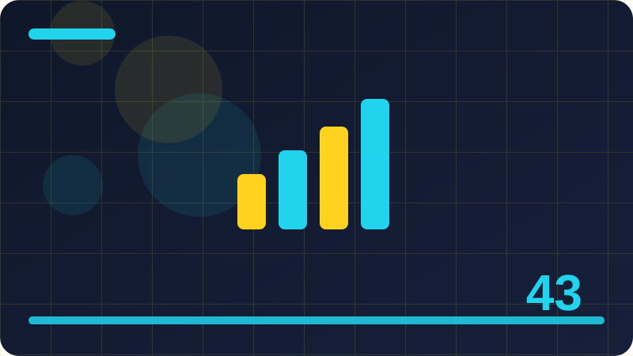

Chapter 43: Window Functions: ROW_NUMBER and RANK

Section 1: What a Window Function Is
This section looks at what a window function is. The idea is easier to grasp when you slow down and describe it in ordinary words before you write any SQL. Start by naming the tables involved and the question the query must answer. If you cannot state that question in one sentence, the design or the query is probably not clear yet. A short sentence forces you to choose what matters and to leave out details that only confuse the reader. Once the question is clear, the tables, columns and filters usually fall into place, and the SQL becomes a translation of that sentence rather than a puzzle you solve by trial and error.
Think about why what a window function is matters in real work. A database is not judged by clever syntax alone. It is judged by whether the right rows come back, whether updates stay consistent, and whether another person can understand the query next month. What a Window Function Is helps on all three counts when it is used deliberately. It gives you a repeatable way to check your own work, to explain a decision to a teammate, and to spot a mistake before it reaches a report or an application screen.
Work through what a window function is step by step. First, look at a small set of fictional rows and say what you expect to happen. Second, write the smallest query or design change that tests that expectation. Third, read the result row by row and compare it with what you predicted. When the result differs, do not simply change the query until it looks right. Ask which assumption was wrong, because that question teaches far more than a corrected line of SQL. Small examples make this loop fast and honest.
A common mistake with what a window function is is to jump to a finished answer without checking the middle steps. Another is to copy a pattern that worked for one table and assume it fits a different table with different keys, dates or duplicates. Check the keys first, then check for duplicates, then check for missing values. Those three checks catch most surprises. If a result still looks strange, reduce the data to five or six rows and trace each row by hand before you add complexity back in.
To practise what a window function is, build a tiny fictional dataset of your own. Use made-up people, books, orders or courses, keep the numbers small, and include at least one awkward case such as a tie, a missing value or a repeated name. Write the query, predict the output, run it in your head or in a database, and write down what surprised you. That short note becomes your own reference. Over time, a collection of such notes is worth more than a long list of memorised syntax, because it records judgement, not just commands. Ask what would change if one row were added, removed or duplicated.
SELECT book_title, genre, RANK() OVER (PARTITION BY genre ORDER BY loan_count DESC) AS genre_rank FROM book_loans;Check: How would you explain what a window function is to a beginner, and what small fictional example would you use to test whether you really understand it?
Section 2: Rows, Partitions and Windows Explained
This section looks at rows, partitions and windows explained. The idea is easier to grasp when you slow down and describe it in ordinary words before you write any SQL. Start by naming the tables involved and the question the query must answer. If you cannot state that question in one sentence, the design or the query is probably not clear yet. A short sentence forces you to choose what matters and to leave out details that only confuse the reader. Once the question is clear, the tables, columns and filters usually fall into place, and the SQL becomes a translation of that sentence rather than a puzzle you solve by trial and error.
Think about why rows, partitions and windows explained matters in real work. A database is not judged by clever syntax alone. It is judged by whether the right rows come back, whether updates stay consistent, and whether another person can understand the query next month. Rows, Partitions and Windows Explained helps on all three counts when it is used deliberately. It gives you a repeatable way to check your own work, to explain a decision to a teammate, and to spot a mistake before it reaches a report or an application screen.
Work through rows, partitions and windows explained step by step. First, look at a small set of fictional rows and say what you expect to happen. Second, write the smallest query or design change that tests that expectation. Third, read the result row by row and compare it with what you predicted. When the result differs, do not simply change the query until it looks right. Ask which assumption was wrong, because that question teaches far more than a corrected line of SQL. Small examples make this loop fast and honest.
A common mistake with rows, partitions and windows explained is to jump to a finished answer without checking the middle steps. Another is to copy a pattern that worked for one table and assume it fits a different table with different keys, dates or duplicates. Check the keys first, then check for duplicates, then check for missing values. Those three checks catch most surprises. If a result still looks strange, reduce the data to five or six rows and trace each row by hand before you add complexity back in.
To practise rows, partitions and windows explained, build a tiny fictional dataset of your own. Use made-up people, books, orders or courses, keep the numbers small, and include at least one awkward case such as a tie, a missing value or a repeated name. Write the query, predict the output, run it in your head or in a database, and write down what surprised you. That short note becomes your own reference. Over time, a collection of such notes is worth more than a long list of memorised syntax, because it records judgement, not just commands. Keep column names clear so a reader can follow the logic without extra notes.
SELECT customer_name, order_date, ROW_NUMBER() OVER (PARTITION BY customer_id ORDER BY order_date DESC) AS latest_first FROM orders;Check: How would you explain rows, partitions and windows explained to a beginner, and what small fictional example would you use to test whether you really understand it?
Section 3: OVER in Plain Language
This section looks at over in plain language. The idea is easier to grasp when you slow down and describe it in ordinary words before you write any SQL. Start by naming the tables involved and the question the query must answer. If you cannot state that question in one sentence, the design or the query is probably not clear yet. A short sentence forces you to choose what matters and to leave out details that only confuse the reader. Once the question is clear, the tables, columns and filters usually fall into place, and the SQL becomes a translation of that sentence rather than a puzzle you solve by trial and error.
Think about why over in plain language matters in real work. A database is not judged by clever syntax alone. It is judged by whether the right rows come back, whether updates stay consistent, and whether another person can understand the query next month. OVER in Plain Language helps on all three counts when it is used deliberately. It gives you a repeatable way to check your own work, to explain a decision to a teammate, and to spot a mistake before it reaches a report or an application screen.
Work through over in plain language step by step. First, look at a small set of fictional rows and say what you expect to happen. Second, write the smallest query or design change that tests that expectation. Third, read the result row by row and compare it with what you predicted. When the result differs, do not simply change the query until it looks right. Ask which assumption was wrong, because that question teaches far more than a corrected line of SQL. Small examples make this loop fast and honest.
A common mistake with over in plain language is to jump to a finished answer without checking the middle steps. Another is to copy a pattern that worked for one table and assume it fits a different table with different keys, dates or duplicates. Check the keys first, then check for duplicates, then check for missing values. Those three checks catch most surprises. If a result still looks strange, reduce the data to five or six rows and trace each row by hand before you add complexity back in.
To practise over in plain language, build a tiny fictional dataset of your own. Use made-up people, books, orders or courses, keep the numbers small, and include at least one awkward case such as a tie, a missing value or a repeated name. Write the query, predict the output, run it in your head or in a database, and write down what surprised you. That short note becomes your own reference. Over time, a collection of such notes is worth more than a long list of memorised syntax, because it records judgement, not just commands. Test with a tie, a missing value and an empty group before you trust a query.
SELECT course_code, student_name, DENSE_RANK() OVER (PARTITION BY course_code ORDER BY score DESC) AS dense_position FROM results;Check: How would you explain over in plain language to a beginner, and what small fictional example would you use to test whether you really understand it?
Section 4: ROW_NUMBER in Plain Language
This section looks at row_number in plain language. The idea is easier to grasp when you slow down and describe it in ordinary words before you write any SQL. Start by naming the tables involved and the question the query must answer. If you cannot state that question in one sentence, the design or the query is probably not clear yet. A short sentence forces you to choose what matters and to leave out details that only confuse the reader. Once the question is clear, the tables, columns and filters usually fall into place, and the SQL becomes a translation of that sentence rather than a puzzle you solve by trial and error.
Think about why row_number in plain language matters in real work. A database is not judged by clever syntax alone. It is judged by whether the right rows come back, whether updates stay consistent, and whether another person can understand the query next month. ROW_NUMBER in Plain Language helps on all three counts when it is used deliberately. It gives you a repeatable way to check your own work, to explain a decision to a teammate, and to spot a mistake before it reaches a report or an application screen.
Work through row_number in plain language step by step. First, look at a small set of fictional rows and say what you expect to happen. Second, write the smallest query or design change that tests that expectation. Third, read the result row by row and compare it with what you predicted. When the result differs, do not simply change the query until it looks right. Ask which assumption was wrong, because that question teaches far more than a corrected line of SQL. Small examples make this loop fast and honest.
A common mistake with row_number in plain language is to jump to a finished answer without checking the middle steps. Another is to copy a pattern that worked for one table and assume it fits a different table with different keys, dates or duplicates. Check the keys first, then check for duplicates, then check for missing values. Those three checks catch most surprises. If a result still looks strange, reduce the data to five or six rows and trace each row by hand before you add complexity back in.
To practise row_number in plain language, build a tiny fictional dataset of your own. Use made-up people, books, orders or courses, keep the numbers small, and include at least one awkward case such as a tie, a missing value or a repeated name. Write the query, predict the output, run it in your head or in a database, and write down what surprised you. That short note becomes your own reference. Over time, a collection of such notes is worth more than a long list of memorised syntax, because it records judgement, not just commands. Write the expected output first, then compare it with the actual output row by row.
SELECT order_id, total_amount, RANK() OVER (ORDER BY total_amount DESC) AS amount_rank FROM orders;Check: How would you explain row_number in plain language to a beginner, and what small fictional example would you use to test whether you really understand it?
Section 5: Reading a ROW_NUMBER Result Row by Row
This section looks at reading a row_number result row by row. The idea is easier to grasp when you slow down and describe it in ordinary words before you write any SQL. Start by naming the tables involved and the question the query must answer. If you cannot state that question in one sentence, the design or the query is probably not clear yet. A short sentence forces you to choose what matters and to leave out details that only confuse the reader. Once the question is clear, the tables, columns and filters usually fall into place, and the SQL becomes a translation of that sentence rather than a puzzle you solve by trial and error.
Think about why reading a row_number result row by row matters in real work. A database is not judged by clever syntax alone. It is judged by whether the right rows come back, whether updates stay consistent, and whether another person can understand the query next month. Reading a ROW_NUMBER Result Row by Row helps on all three counts when it is used deliberately. It gives you a repeatable way to check your own work, to explain a decision to a teammate, and to spot a mistake before it reaches a report or an application screen.
Work through reading a row_number result row by row step by step. First, look at a small set of fictional rows and say what you expect to happen. Second, write the smallest query or design change that tests that expectation. Third, read the result row by row and compare it with what you predicted. When the result differs, do not simply change the query until it looks right. Ask which assumption was wrong, because that question teaches far more than a corrected line of SQL. Small examples make this loop fast and honest.
A common mistake with reading a row_number result row by row is to jump to a finished answer without checking the middle steps. Another is to copy a pattern that worked for one table and assume it fits a different table with different keys, dates or duplicates. Check the keys first, then check for duplicates, then check for missing values. Those three checks catch most surprises. If a result still looks strange, reduce the data to five or six rows and trace each row by hand before you add complexity back in.
To practise reading a row_number result row by row, build a tiny fictional dataset of your own. Use made-up people, books, orders or courses, keep the numbers small, and include at least one awkward case such as a tie, a missing value or a repeated name. Write the query, predict the output, run it in your head or in a database, and write down what surprised you. That short note becomes your own reference. Over time, a collection of such notes is worth more than a long list of memorised syntax, because it records judgement, not just commands.
SELECT student_name, course_code, ROW_NUMBER() OVER (PARTITION BY course_code ORDER BY score DESC) AS position FROM results;Check: How would you explain reading a row_number result row by row to a beginner, and what small fictional example would you use to test whether you really understand it?
Section 6: PARTITION BY in Plain Language
This section looks at partition by in plain language. The idea is easier to grasp when you slow down and describe it in ordinary words before you write any SQL. Start by naming the tables involved and the question the query must answer. If you cannot state that question in one sentence, the design or the query is probably not clear yet. A short sentence forces you to choose what matters and to leave out details that only confuse the reader. Once the question is clear, the tables, columns and filters usually fall into place, and the SQL becomes a translation of that sentence rather than a puzzle you solve by trial and error.
Think about why partition by in plain language matters in real work. A database is not judged by clever syntax alone. It is judged by whether the right rows come back, whether updates stay consistent, and whether another person can understand the query next month. PARTITION BY in Plain Language helps on all three counts when it is used deliberately. It gives you a repeatable way to check your own work, to explain a decision to a teammate, and to spot a mistake before it reaches a report or an application screen.
Work through partition by in plain language step by step. First, look at a small set of fictional rows and say what you expect to happen. Second, write the smallest query or design change that tests that expectation. Third, read the result row by row and compare it with what you predicted. When the result differs, do not simply change the query until it looks right. Ask which assumption was wrong, because that question teaches far more than a corrected line of SQL. Small examples make this loop fast and honest.
A common mistake with partition by in plain language is to jump to a finished answer without checking the middle steps. Another is to copy a pattern that worked for one table and assume it fits a different table with different keys, dates or duplicates. Check the keys first, then check for duplicates, then check for missing values. Those three checks catch most surprises. If a result still looks strange, reduce the data to five or six rows and trace each row by hand before you add complexity back in.
To practise partition by in plain language, build a tiny fictional dataset of your own. Use made-up people, books, orders or courses, keep the numbers small, and include at least one awkward case such as a tie, a missing value or a repeated name. Write the query, predict the output, run it in your head or in a database, and write down what surprised you. That short note becomes your own reference. Over time, a collection of such notes is worth more than a long list of memorised syntax, because it records judgement, not just commands. Explain the result to a colleague in plain words before calling the work finished.
SELECT book_title, genre, RANK() OVER (PARTITION BY genre ORDER BY loan_count DESC) AS genre_rank FROM book_loans;Check: How would you explain partition by in plain language to a beginner, and what small fictional example would you use to test whether you really understand it?
Section 7: ORDER BY Inside OVER
This section looks at order by inside over. The idea is easier to grasp when you slow down and describe it in ordinary words before you write any SQL. Start by naming the tables involved and the question the query must answer. If you cannot state that question in one sentence, the design or the query is probably not clear yet. A short sentence forces you to choose what matters and to leave out details that only confuse the reader. Once the question is clear, the tables, columns and filters usually fall into place, and the SQL becomes a translation of that sentence rather than a puzzle you solve by trial and error.
Think about why order by inside over matters in real work. A database is not judged by clever syntax alone. It is judged by whether the right rows come back, whether updates stay consistent, and whether another person can understand the query next month. ORDER BY Inside OVER helps on all three counts when it is used deliberately. It gives you a repeatable way to check your own work, to explain a decision to a teammate, and to spot a mistake before it reaches a report or an application screen.
Work through order by inside over step by step. First, look at a small set of fictional rows and say what you expect to happen. Second, write the smallest query or design change that tests that expectation. Third, read the result row by row and compare it with what you predicted. When the result differs, do not simply change the query until it looks right. Ask which assumption was wrong, because that question teaches far more than a corrected line of SQL. Small examples make this loop fast and honest.
A common mistake with order by inside over is to jump to a finished answer without checking the middle steps. Another is to copy a pattern that worked for one table and assume it fits a different table with different keys, dates or duplicates. Check the keys first, then check for duplicates, then check for missing values. Those three checks catch most surprises. If a result still looks strange, reduce the data to five or six rows and trace each row by hand before you add complexity back in.
To practise order by inside over, build a tiny fictional dataset of your own. Use made-up people, books, orders or courses, keep the numbers small, and include at least one awkward case such as a tie, a missing value or a repeated name. Write the query, predict the output, run it in your head or in a database, and write down what surprised you. That short note becomes your own reference. Over time, a collection of such notes is worth more than a long list of memorised syntax, because it records judgement, not just commands. Check the grain of the data: one row per what, exactly, in this result? Separate the question from the technique, and choose the technique second.
SELECT customer_name, order_date, ROW_NUMBER() OVER (PARTITION BY customer_id ORDER BY order_date DESC) AS latest_first FROM orders;Check: How would you explain order by inside over to a beginner, and what small fictional example would you use to test whether you really understand it?
Section 8: ROW_NUMBER Within Each Group
This section looks at row_number within each group. The idea is easier to grasp when you slow down and describe it in ordinary words before you write any SQL. Start by naming the tables involved and the question the query must answer. If you cannot state that question in one sentence, the design or the query is probably not clear yet. A short sentence forces you to choose what matters and to leave out details that only confuse the reader. Once the question is clear, the tables, columns and filters usually fall into place, and the SQL becomes a translation of that sentence rather than a puzzle you solve by trial and error.
Think about why row_number within each group matters in real work. A database is not judged by clever syntax alone. It is judged by whether the right rows come back, whether updates stay consistent, and whether another person can understand the query next month. ROW_NUMBER Within Each Group helps on all three counts when it is used deliberately. It gives you a repeatable way to check your own work, to explain a decision to a teammate, and to spot a mistake before it reaches a report or an application screen.
Work through row_number within each group step by step. First, look at a small set of fictional rows and say what you expect to happen. Second, write the smallest query or design change that tests that expectation. Third, read the result row by row and compare it with what you predicted. When the result differs, do not simply change the query until it looks right. Ask which assumption was wrong, because that question teaches far more than a corrected line of SQL. Small examples make this loop fast and honest.
A common mistake with row_number within each group is to jump to a finished answer without checking the middle steps. Another is to copy a pattern that worked for one table and assume it fits a different table with different keys, dates or duplicates. Check the keys first, then check for duplicates, then check for missing values. Those three checks catch most surprises. If a result still looks strange, reduce the data to five or six rows and trace each row by hand before you add complexity back in.
To practise row_number within each group, build a tiny fictional dataset of your own. Use made-up people, books, orders or courses, keep the numbers small, and include at least one awkward case such as a tie, a missing value or a repeated name. Write the query, predict the output, run it in your head or in a database, and write down what surprised you. That short note becomes your own reference. Over time, a collection of such notes is worth more than a long list of memorised syntax, because it records judgement, not just commands. Separate the question from the technique, and choose the technique second. Document any assumption about ordering, grouping or missing values in a comment.
SELECT course_code, student_name, DENSE_RANK() OVER (PARTITION BY course_code ORDER BY score DESC) AS dense_position FROM results;Check: How would you explain row_number within each group to a beginner, and what small fictional example would you use to test whether you really understand it?
Section 9: Ranking Without Ties: ROW_NUMBER
This section looks at ranking without ties: row_number. The idea is easier to grasp when you slow down and describe it in ordinary words before you write any SQL. Start by naming the tables involved and the question the query must answer. If you cannot state that question in one sentence, the design or the query is probably not clear yet. A short sentence forces you to choose what matters and to leave out details that only confuse the reader. Once the question is clear, the tables, columns and filters usually fall into place, and the SQL becomes a translation of that sentence rather than a puzzle you solve by trial and error.
Think about why ranking without ties: row_number matters in real work. A database is not judged by clever syntax alone. It is judged by whether the right rows come back, whether updates stay consistent, and whether another person can understand the query next month. Ranking Without Ties: ROW_NUMBER helps on all three counts when it is used deliberately. It gives you a repeatable way to check your own work, to explain a decision to a teammate, and to spot a mistake before it reaches a report or an application screen.
Work through ranking without ties: row_number step by step. First, look at a small set of fictional rows and say what you expect to happen. Second, write the smallest query or design change that tests that expectation. Third, read the result row by row and compare it with what you predicted. When the result differs, do not simply change the query until it looks right. Ask which assumption was wrong, because that question teaches far more than a corrected line of SQL. Small examples make this loop fast and honest.
A common mistake with ranking without ties: row_number is to jump to a finished answer without checking the middle steps. Another is to copy a pattern that worked for one table and assume it fits a different table with different keys, dates or duplicates. Check the keys first, then check for duplicates, then check for missing values. Those three checks catch most surprises. If a result still looks strange, reduce the data to five or six rows and trace each row by hand before you add complexity back in.
To practise ranking without ties: row_number, build a tiny fictional dataset of your own. Use made-up people, books, orders or courses, keep the numbers small, and include at least one awkward case such as a tie, a missing value or a repeated name. Write the query, predict the output, run it in your head or in a database, and write down what surprised you. That short note becomes your own reference. Over time, a collection of such notes is worth more than a long list of memorised syntax, because it records judgement, not just commands. Document any assumption about ordering, grouping or missing values in a comment. A clear intermediate step often prevents a confusing final query.
Check: How would you explain ranking without ties: row_number to a beginner, and what small fictional example would you use to test whether you really understand it?
Section 10: RANK in Plain Language
This section looks at rank in plain language. The idea is easier to grasp when you slow down and describe it in ordinary words before you write any SQL. Start by naming the tables involved and the question the query must answer. If you cannot state that question in one sentence, the design or the query is probably not clear yet. A short sentence forces you to choose what matters and to leave out details that only confuse the reader. Once the question is clear, the tables, columns and filters usually fall into place, and the SQL becomes a translation of that sentence rather than a puzzle you solve by trial and error.
Think about why rank in plain language matters in real work. A database is not judged by clever syntax alone. It is judged by whether the right rows come back, whether updates stay consistent, and whether another person can understand the query next month. RANK in Plain Language helps on all three counts when it is used deliberately. It gives you a repeatable way to check your own work, to explain a decision to a teammate, and to spot a mistake before it reaches a report or an application screen.
Work through rank in plain language step by step. First, look at a small set of fictional rows and say what you expect to happen. Second, write the smallest query or design change that tests that expectation. Third, read the result row by row and compare it with what you predicted. When the result differs, do not simply change the query until it looks right. Ask which assumption was wrong, because that question teaches far more than a corrected line of SQL. Small examples make this loop fast and honest.
A common mistake with rank in plain language is to jump to a finished answer without checking the middle steps. Another is to copy a pattern that worked for one table and assume it fits a different table with different keys, dates or duplicates. Check the keys first, then check for duplicates, then check for missing values. Those three checks catch most surprises. If a result still looks strange, reduce the data to five or six rows and trace each row by hand before you add complexity back in.
To practise rank in plain language, build a tiny fictional dataset of your own. Use made-up people, books, orders or courses, keep the numbers small, and include at least one awkward case such as a tie, a missing value or a repeated name. Write the query, predict the output, run it in your head or in a database, and write down what surprised you. That short note becomes your own reference. Over time, a collection of such notes is worth more than a long list of memorised syntax, because it records judgement, not just commands. A clear intermediate step often prevents a confusing final query. Revisit the keys whenever a count looks too high or too low.
SELECT student_name, course_code, ROW_NUMBER() OVER (PARTITION BY course_code ORDER BY score DESC) AS position FROM results;Check: How would you explain rank in plain language to a beginner, and what small fictional example would you use to test whether you really understand it?
Section 11: How RANK Handles Ties
This section looks at how rank handles ties. The idea is easier to grasp when you slow down and describe it in ordinary words before you write any SQL. Start by naming the tables involved and the question the query must answer. If you cannot state that question in one sentence, the design or the query is probably not clear yet. A short sentence forces you to choose what matters and to leave out details that only confuse the reader. Once the question is clear, the tables, columns and filters usually fall into place, and the SQL becomes a translation of that sentence rather than a puzzle you solve by trial and error.
Think about why how rank handles ties matters in real work. A database is not judged by clever syntax alone. It is judged by whether the right rows come back, whether updates stay consistent, and whether another person can understand the query next month. How RANK Handles Ties helps on all three counts when it is used deliberately. It gives you a repeatable way to check your own work, to explain a decision to a teammate, and to spot a mistake before it reaches a report or an application screen.
Work through how rank handles ties step by step. First, look at a small set of fictional rows and say what you expect to happen. Second, write the smallest query or design change that tests that expectation. Third, read the result row by row and compare it with what you predicted. When the result differs, do not simply change the query until it looks right. Ask which assumption was wrong, because that question teaches far more than a corrected line of SQL. Small examples make this loop fast and honest.
A common mistake with how rank handles ties is to jump to a finished answer without checking the middle steps. Another is to copy a pattern that worked for one table and assume it fits a different table with different keys, dates or duplicates. Check the keys first, then check for duplicates, then check for missing values. Those three checks catch most surprises. If a result still looks strange, reduce the data to five or six rows and trace each row by hand before you add complexity back in.
To practise how rank handles ties, build a tiny fictional dataset of your own. Use made-up people, books, orders or courses, keep the numbers small, and include at least one awkward case such as a tie, a missing value or a repeated name. Write the query, predict the output, run it in your head or in a database, and write down what surprised you. That short note becomes your own reference. Over time, a collection of such notes is worth more than a long list of memorised syntax, because it records judgement, not just commands. Revisit the keys whenever a count looks too high or too low. Prefer a readable query over a compact one when both give the same answer.
SELECT book_title, genre, RANK() OVER (PARTITION BY genre ORDER BY loan_count DESC) AS genre_rank FROM book_loans;Check: How would you explain how rank handles ties to a beginner, and what small fictional example would you use to test whether you really understand it?
Section 12: Skipped Ranks After a Tie
This section looks at skipped ranks after a tie. The idea is easier to grasp when you slow down and describe it in ordinary words before you write any SQL. Start by naming the tables involved and the question the query must answer. If you cannot state that question in one sentence, the design or the query is probably not clear yet. A short sentence forces you to choose what matters and to leave out details that only confuse the reader. Once the question is clear, the tables, columns and filters usually fall into place, and the SQL becomes a translation of that sentence rather than a puzzle you solve by trial and error.
Think about why skipped ranks after a tie matters in real work. A database is not judged by clever syntax alone. It is judged by whether the right rows come back, whether updates stay consistent, and whether another person can understand the query next month. Skipped Ranks After a Tie helps on all three counts when it is used deliberately. It gives you a repeatable way to check your own work, to explain a decision to a teammate, and to spot a mistake before it reaches a report or an application screen.
Work through skipped ranks after a tie step by step. First, look at a small set of fictional rows and say what you expect to happen. Second, write the smallest query or design change that tests that expectation. Third, read the result row by row and compare it with what you predicted. When the result differs, do not simply change the query until it looks right. Ask which assumption was wrong, because that question teaches far more than a corrected line of SQL. Small examples make this loop fast and honest.
A common mistake with skipped ranks after a tie is to jump to a finished answer without checking the middle steps. Another is to copy a pattern that worked for one table and assume it fits a different table with different keys, dates or duplicates. Check the keys first, then check for duplicates, then check for missing values. Those three checks catch most surprises. If a result still looks strange, reduce the data to five or six rows and trace each row by hand before you add complexity back in.
To practise skipped ranks after a tie, build a tiny fictional dataset of your own. Use made-up people, books, orders or courses, keep the numbers small, and include at least one awkward case such as a tie, a missing value or a repeated name. Write the query, predict the output, run it in your head or in a database, and write down what surprised you. That short note becomes your own reference. Over time, a collection of such notes is worth more than a long list of memorised syntax, because it records judgement, not just commands. Prefer a readable query over a compact one when both give the same answer.
SELECT customer_name, order_date, ROW_NUMBER() OVER (PARTITION BY customer_id ORDER BY order_date DESC) AS latest_first FROM orders;Check: How would you explain skipped ranks after a tie to a beginner, and what small fictional example would you use to test whether you really understand it?
Section 13: DENSE_RANK Compared with RANK
This section looks at dense_rank compared with rank. The idea is easier to grasp when you slow down and describe it in ordinary words before you write any SQL. Start by naming the tables involved and the question the query must answer. If you cannot state that question in one sentence, the design or the query is probably not clear yet. A short sentence forces you to choose what matters and to leave out details that only confuse the reader. Once the question is clear, the tables, columns and filters usually fall into place, and the SQL becomes a translation of that sentence rather than a puzzle you solve by trial and error.
Think about why dense_rank compared with rank matters in real work. A database is not judged by clever syntax alone. It is judged by whether the right rows come back, whether updates stay consistent, and whether another person can understand the query next month. DENSE_RANK Compared with RANK helps on all three counts when it is used deliberately. It gives you a repeatable way to check your own work, to explain a decision to a teammate, and to spot a mistake before it reaches a report or an application screen.
Work through dense_rank compared with rank step by step. First, look at a small set of fictional rows and say what you expect to happen. Second, write the smallest query or design change that tests that expectation. Third, read the result row by row and compare it with what you predicted. When the result differs, do not simply change the query until it looks right. Ask which assumption was wrong, because that question teaches far more than a corrected line of SQL. Small examples make this loop fast and honest.
A common mistake with dense_rank compared with rank is to jump to a finished answer without checking the middle steps. Another is to copy a pattern that worked for one table and assume it fits a different table with different keys, dates or duplicates. Check the keys first, then check for duplicates, then check for missing values. Those three checks catch most surprises. If a result still looks strange, reduce the data to five or six rows and trace each row by hand before you add complexity back in.
To practise dense_rank compared with rank, build a tiny fictional dataset of your own. Use made-up people, books, orders or courses, keep the numbers small, and include at least one awkward case such as a tie, a missing value or a repeated name. Write the query, predict the output, run it in your head or in a database, and write down what surprised you. That short note becomes your own reference. Over time, a collection of such notes is worth more than a long list of memorised syntax, because it records judgement, not just commands. Notice whether the result preserves every input row or intentionally reduces them. Try the same logic on a second fictional example to confirm it generalises.
SELECT course_code, student_name, DENSE_RANK() OVER (PARTITION BY course_code ORDER BY score DESC) AS dense_position FROM results;Check: How would you explain dense_rank compared with rank to a beginner, and what small fictional example would you use to test whether you really understand it?
Section 14: Choosing Between RANK and DENSE_RANK
This section looks at choosing between rank and dense_rank. The idea is easier to grasp when you slow down and describe it in ordinary words before you write any SQL. Start by naming the tables involved and the question the query must answer. If you cannot state that question in one sentence, the design or the query is probably not clear yet. A short sentence forces you to choose what matters and to leave out details that only confuse the reader. Once the question is clear, the tables, columns and filters usually fall into place, and the SQL becomes a translation of that sentence rather than a puzzle you solve by trial and error.
Think about why choosing between rank and dense_rank matters in real work. A database is not judged by clever syntax alone. It is judged by whether the right rows come back, whether updates stay consistent, and whether another person can understand the query next month. Choosing Between RANK and DENSE_RANK helps on all three counts when it is used deliberately. It gives you a repeatable way to check your own work, to explain a decision to a teammate, and to spot a mistake before it reaches a report or an application screen.
Work through choosing between rank and dense_rank step by step. First, look at a small set of fictional rows and say what you expect to happen. Second, write the smallest query or design change that tests that expectation. Third, read the result row by row and compare it with what you predicted. When the result differs, do not simply change the query until it looks right. Ask which assumption was wrong, because that question teaches far more than a corrected line of SQL. Small examples make this loop fast and honest.
A common mistake with choosing between rank and dense_rank is to jump to a finished answer without checking the middle steps. Another is to copy a pattern that worked for one table and assume it fits a different table with different keys, dates or duplicates. Check the keys first, then check for duplicates, then check for missing values. Those three checks catch most surprises. If a result still looks strange, reduce the data to five or six rows and trace each row by hand before you add complexity back in.
To practise choosing between rank and dense_rank, build a tiny fictional dataset of your own. Use made-up people, books, orders or courses, keep the numbers small, and include at least one awkward case such as a tie, a missing value or a repeated name. Write the query, predict the output, run it in your head or in a database, and write down what surprised you. That short note becomes your own reference. Over time, a collection of such notes is worth more than a long list of memorised syntax, because it records judgement, not just commands. Try the same logic on a second fictional example to confirm it generalises.
SELECT order_id, total_amount, RANK() OVER (ORDER BY total_amount DESC) AS amount_rank FROM orders;Check: How would you explain choosing between rank and dense_rank to a beginner, and what small fictional example would you use to test whether you really understand it?
Section 15: ROW_NUMBER for Top One per Group
This section looks at row_number for top one per group. The idea is easier to grasp when you slow down and describe it in ordinary words before you write any SQL. Start by naming the tables involved and the question the query must answer. If you cannot state that question in one sentence, the design or the query is probably not clear yet. A short sentence forces you to choose what matters and to leave out details that only confuse the reader. Once the question is clear, the tables, columns and filters usually fall into place, and the SQL becomes a translation of that sentence rather than a puzzle you solve by trial and error.
Think about why row_number for top one per group matters in real work. A database is not judged by clever syntax alone. It is judged by whether the right rows come back, whether updates stay consistent, and whether another person can understand the query next month. ROW_NUMBER for Top One per Group helps on all three counts when it is used deliberately. It gives you a repeatable way to check your own work, to explain a decision to a teammate, and to spot a mistake before it reaches a report or an application screen.
Work through row_number for top one per group step by step. First, look at a small set of fictional rows and say what you expect to happen. Second, write the smallest query or design change that tests that expectation. Third, read the result row by row and compare it with what you predicted. When the result differs, do not simply change the query until it looks right. Ask which assumption was wrong, because that question teaches far more than a corrected line of SQL. Small examples make this loop fast and honest.
A common mistake with row_number for top one per group is to jump to a finished answer without checking the middle steps. Another is to copy a pattern that worked for one table and assume it fits a different table with different keys, dates or duplicates. Check the keys first, then check for duplicates, then check for missing values. Those three checks catch most surprises. If a result still looks strange, reduce the data to five or six rows and trace each row by hand before you add complexity back in.
To practise row_number for top one per group, build a tiny fictional dataset of your own. Use made-up people, books, orders or courses, keep the numbers small, and include at least one awkward case such as a tie, a missing value or a repeated name. Write the query, predict the output, run it in your head or in a database, and write down what surprised you. That short note becomes your own reference. Over time, a collection of such notes is worth more than a long list of memorised syntax, because it records judgement, not just commands. Read the query aloud and check that each clause earns its place in the result.
SELECT student_name, course_code, ROW_NUMBER() OVER (PARTITION BY course_code ORDER BY score DESC) AS position FROM results;Check: How would you explain row_number for top one per group to a beginner, and what small fictional example would you use to test whether you really understand it?
Section 16: ROW_NUMBER for Top Three per Group
This section looks at row_number for top three per group. The idea is easier to grasp when you slow down and describe it in ordinary words before you write any SQL. Start by naming the tables involved and the question the query must answer. If you cannot state that question in one sentence, the design or the query is probably not clear yet. A short sentence forces you to choose what matters and to leave out details that only confuse the reader. Once the question is clear, the tables, columns and filters usually fall into place, and the SQL becomes a translation of that sentence rather than a puzzle you solve by trial and error.
Think about why row_number for top three per group matters in real work. A database is not judged by clever syntax alone. It is judged by whether the right rows come back, whether updates stay consistent, and whether another person can understand the query next month. ROW_NUMBER for Top Three per Group helps on all three counts when it is used deliberately. It gives you a repeatable way to check your own work, to explain a decision to a teammate, and to spot a mistake before it reaches a report or an application screen.
Work through row_number for top three per group step by step. First, look at a small set of fictional rows and say what you expect to happen. Second, write the smallest query or design change that tests that expectation. Third, read the result row by row and compare it with what you predicted. When the result differs, do not simply change the query until it looks right. Ask which assumption was wrong, because that question teaches far more than a corrected line of SQL. Small examples make this loop fast and honest.
A common mistake with row_number for top three per group is to jump to a finished answer without checking the middle steps. Another is to copy a pattern that worked for one table and assume it fits a different table with different keys, dates or duplicates. Check the keys first, then check for duplicates, then check for missing values. Those three checks catch most surprises. If a result still looks strange, reduce the data to five or six rows and trace each row by hand before you add complexity back in.
To practise row_number for top three per group, build a tiny fictional dataset of your own. Use made-up people, books, orders or courses, keep the numbers small, and include at least one awkward case such as a tie, a missing value or a repeated name. Write the query, predict the output, run it in your head or in a database, and write down what surprised you. That short note becomes your own reference. Over time, a collection of such notes is worth more than a long list of memorised syntax, because it records judgement, not just commands. Ask what would change if one row were added, removed or duplicated.
SELECT book_title, genre, RANK() OVER (PARTITION BY genre ORDER BY loan_count DESC) AS genre_rank FROM book_loans;Check: How would you explain row_number for top three per group to a beginner, and what small fictional example would you use to test whether you really understand it?
Section 17: Filtering on a Window Result
This section looks at filtering on a window result. The idea is easier to grasp when you slow down and describe it in ordinary words before you write any SQL. Start by naming the tables involved and the question the query must answer. If you cannot state that question in one sentence, the design or the query is probably not clear yet. A short sentence forces you to choose what matters and to leave out details that only confuse the reader. Once the question is clear, the tables, columns and filters usually fall into place, and the SQL becomes a translation of that sentence rather than a puzzle you solve by trial and error.
Think about why filtering on a window result matters in real work. A database is not judged by clever syntax alone. It is judged by whether the right rows come back, whether updates stay consistent, and whether another person can understand the query next month. Filtering on a Window Result helps on all three counts when it is used deliberately. It gives you a repeatable way to check your own work, to explain a decision to a teammate, and to spot a mistake before it reaches a report or an application screen.
Work through filtering on a window result step by step. First, look at a small set of fictional rows and say what you expect to happen. Second, write the smallest query or design change that tests that expectation. Third, read the result row by row and compare it with what you predicted. When the result differs, do not simply change the query until it looks right. Ask which assumption was wrong, because that question teaches far more than a corrected line of SQL. Small examples make this loop fast and honest.
A common mistake with filtering on a window result is to jump to a finished answer without checking the middle steps. Another is to copy a pattern that worked for one table and assume it fits a different table with different keys, dates or duplicates. Check the keys first, then check for duplicates, then check for missing values. Those three checks catch most surprises. If a result still looks strange, reduce the data to five or six rows and trace each row by hand before you add complexity back in.
To practise filtering on a window result, build a tiny fictional dataset of your own. Use made-up people, books, orders or courses, keep the numbers small, and include at least one awkward case such as a tie, a missing value or a repeated name. Write the query, predict the output, run it in your head or in a database, and write down what surprised you. That short note becomes your own reference. Over time, a collection of such notes is worth more than a long list of memorised syntax, because it records judgement, not just commands. Keep column names clear so a reader can follow the logic without extra notes.
SELECT customer_name, order_date, ROW_NUMBER() OVER (PARTITION BY customer_id ORDER BY order_date DESC) AS latest_first FROM orders;Check: How would you explain filtering on a window result to a beginner, and what small fictional example would you use to test whether you really understand it?
Section 18: Why You Cannot Filter in the Same WHERE
This section looks at why you cannot filter in the same where. The idea is easier to grasp when you slow down and describe it in ordinary words before you write any SQL. Start by naming the tables involved and the question the query must answer. If you cannot state that question in one sentence, the design or the query is probably not clear yet. A short sentence forces you to choose what matters and to leave out details that only confuse the reader. Once the question is clear, the tables, columns and filters usually fall into place, and the SQL becomes a translation of that sentence rather than a puzzle you solve by trial and error.
Think about why why you cannot filter in the same where matters in real work. A database is not judged by clever syntax alone. It is judged by whether the right rows come back, whether updates stay consistent, and whether another person can understand the query next month. Why You Cannot Filter in the Same WHERE helps on all three counts when it is used deliberately. It gives you a repeatable way to check your own work, to explain a decision to a teammate, and to spot a mistake before it reaches a report or an application screen.
Work through why you cannot filter in the same where step by step. First, look at a small set of fictional rows and say what you expect to happen. Second, write the smallest query or design change that tests that expectation. Third, read the result row by row and compare it with what you predicted. When the result differs, do not simply change the query until it looks right. Ask which assumption was wrong, because that question teaches far more than a corrected line of SQL. Small examples make this loop fast and honest.
A common mistake with why you cannot filter in the same where is to jump to a finished answer without checking the middle steps. Another is to copy a pattern that worked for one table and assume it fits a different table with different keys, dates or duplicates. Check the keys first, then check for duplicates, then check for missing values. Those three checks catch most surprises. If a result still looks strange, reduce the data to five or six rows and trace each row by hand before you add complexity back in.
To practise why you cannot filter in the same where, build a tiny fictional dataset of your own. Use made-up people, books, orders or courses, keep the numbers small, and include at least one awkward case such as a tie, a missing value or a repeated name. Write the query, predict the output, run it in your head or in a database, and write down what surprised you. That short note becomes your own reference. Over time, a collection of such notes is worth more than a long list of memorised syntax, because it records judgement, not just commands.
SELECT course_code, student_name, DENSE_RANK() OVER (PARTITION BY course_code ORDER BY score DESC) AS dense_position FROM results;Check: How would you explain why you cannot filter in the same where to a beginner, and what small fictional example would you use to test whether you really understand it?
Section 19: Using a Subquery Around a Window Function
This section looks at using a subquery around a window function. The idea is easier to grasp when you slow down and describe it in ordinary words before you write any SQL. Start by naming the tables involved and the question the query must answer. If you cannot state that question in one sentence, the design or the query is probably not clear yet. A short sentence forces you to choose what matters and to leave out details that only confuse the reader. Once the question is clear, the tables, columns and filters usually fall into place, and the SQL becomes a translation of that sentence rather than a puzzle you solve by trial and error.
Think about why using a subquery around a window function matters in real work. A database is not judged by clever syntax alone. It is judged by whether the right rows come back, whether updates stay consistent, and whether another person can understand the query next month. Using a Subquery Around a Window Function helps on all three counts when it is used deliberately. It gives you a repeatable way to check your own work, to explain a decision to a teammate, and to spot a mistake before it reaches a report or an application screen.
Work through using a subquery around a window function step by step. First, look at a small set of fictional rows and say what you expect to happen. Second, write the smallest query or design change that tests that expectation. Third, read the result row by row and compare it with what you predicted. When the result differs, do not simply change the query until it looks right. Ask which assumption was wrong, because that question teaches far more than a corrected line of SQL. Small examples make this loop fast and honest.
A common mistake with using a subquery around a window function is to jump to a finished answer without checking the middle steps. Another is to copy a pattern that worked for one table and assume it fits a different table with different keys, dates or duplicates. Check the keys first, then check for duplicates, then check for missing values. Those three checks catch most surprises. If a result still looks strange, reduce the data to five or six rows and trace each row by hand before you add complexity back in.
To practise using a subquery around a window function, build a tiny fictional dataset of your own. Use made-up people, books, orders or courses, keep the numbers small, and include at least one awkward case such as a tie, a missing value or a repeated name. Write the query, predict the output, run it in your head or in a database, and write down what surprised you. That short note becomes your own reference. Over time, a collection of such notes is worth more than a long list of memorised syntax, because it records judgement, not just commands.
Check: How would you explain using a subquery around a window function to a beginner, and what small fictional example would you use to test whether you really understand it?
Section 20: Window Functions and Sorting Results
This section looks at window functions and sorting results. The idea is easier to grasp when you slow down and describe it in ordinary words before you write any SQL. Start by naming the tables involved and the question the query must answer. If you cannot state that question in one sentence, the design or the query is probably not clear yet. A short sentence forces you to choose what matters and to leave out details that only confuse the reader. Once the question is clear, the tables, columns and filters usually fall into place, and the SQL becomes a translation of that sentence rather than a puzzle you solve by trial and error.
Think about why window functions and sorting results matters in real work. A database is not judged by clever syntax alone. It is judged by whether the right rows come back, whether updates stay consistent, and whether another person can understand the query next month. Window Functions and Sorting Results helps on all three counts when it is used deliberately. It gives you a repeatable way to check your own work, to explain a decision to a teammate, and to spot a mistake before it reaches a report or an application screen.
Work through window functions and sorting results step by step. First, look at a small set of fictional rows and say what you expect to happen. Second, write the smallest query or design change that tests that expectation. Third, read the result row by row and compare it with what you predicted. When the result differs, do not simply change the query until it looks right. Ask which assumption was wrong, because that question teaches far more than a corrected line of SQL. Small examples make this loop fast and honest.
A common mistake with window functions and sorting results is to jump to a finished answer without checking the middle steps. Another is to copy a pattern that worked for one table and assume it fits a different table with different keys, dates or duplicates. Check the keys first, then check for duplicates, then check for missing values. Those three checks catch most surprises. If a result still looks strange, reduce the data to five or six rows and trace each row by hand before you add complexity back in.
To practise window functions and sorting results, build a tiny fictional dataset of your own. Use made-up people, books, orders or courses, keep the numbers small, and include at least one awkward case such as a tie, a missing value or a repeated name. Write the query, predict the output, run it in your head or in a database, and write down what surprised you. That short note becomes your own reference. Over time, a collection of such notes is worth more than a long list of memorised syntax, because it records judgement, not just commands. Small fictional examples reveal logic errors faster than large realistic datasets.
SELECT student_name, course_code, ROW_NUMBER() OVER (PARTITION BY course_code ORDER BY score DESC) AS position FROM results;Check: How would you explain window functions and sorting results to a beginner, and what small fictional example would you use to test whether you really understand it?
Section 21: Window Functions Without Changing Row Count
This section looks at window functions without changing row count. The idea is easier to grasp when you slow down and describe it in ordinary words before you write any SQL. Start by naming the tables involved and the question the query must answer. If you cannot state that question in one sentence, the design or the query is probably not clear yet. A short sentence forces you to choose what matters and to leave out details that only confuse the reader. Once the question is clear, the tables, columns and filters usually fall into place, and the SQL becomes a translation of that sentence rather than a puzzle you solve by trial and error.
Think about why window functions without changing row count matters in real work. A database is not judged by clever syntax alone. It is judged by whether the right rows come back, whether updates stay consistent, and whether another person can understand the query next month. Window Functions Without Changing Row Count helps on all three counts when it is used deliberately. It gives you a repeatable way to check your own work, to explain a decision to a teammate, and to spot a mistake before it reaches a report or an application screen.
Work through window functions without changing row count step by step. First, look at a small set of fictional rows and say what you expect to happen. Second, write the smallest query or design change that tests that expectation. Third, read the result row by row and compare it with what you predicted. When the result differs, do not simply change the query until it looks right. Ask which assumption was wrong, because that question teaches far more than a corrected line of SQL. Small examples make this loop fast and honest.
A common mistake with window functions without changing row count is to jump to a finished answer without checking the middle steps. Another is to copy a pattern that worked for one table and assume it fits a different table with different keys, dates or duplicates. Check the keys first, then check for duplicates, then check for missing values. Those three checks catch most surprises. If a result still looks strange, reduce the data to five or six rows and trace each row by hand before you add complexity back in.
To practise window functions without changing row count, build a tiny fictional dataset of your own. Use made-up people, books, orders or courses, keep the numbers small, and include at least one awkward case such as a tie, a missing value or a repeated name. Write the query, predict the output, run it in your head or in a database, and write down what surprised you. That short note becomes your own reference. Over time, a collection of such notes is worth more than a long list of memorised syntax, because it records judgement, not just commands. Explain the result to a colleague in plain words before calling the work finished.
SELECT book_title, genre, RANK() OVER (PARTITION BY genre ORDER BY loan_count DESC) AS genre_rank FROM book_loans;Check: How would you explain window functions without changing row count to a beginner, and what small fictional example would you use to test whether you really understand it?
Section 22: Aggregates Versus Window Functions
This section looks at aggregates versus window functions. The idea is easier to grasp when you slow down and describe it in ordinary words before you write any SQL. Start by naming the tables involved and the question the query must answer. If you cannot state that question in one sentence, the design or the query is probably not clear yet. A short sentence forces you to choose what matters and to leave out details that only confuse the reader. Once the question is clear, the tables, columns and filters usually fall into place, and the SQL becomes a translation of that sentence rather than a puzzle you solve by trial and error.
Think about why aggregates versus window functions matters in real work. A database is not judged by clever syntax alone. It is judged by whether the right rows come back, whether updates stay consistent, and whether another person can understand the query next month. Aggregates Versus Window Functions helps on all three counts when it is used deliberately. It gives you a repeatable way to check your own work, to explain a decision to a teammate, and to spot a mistake before it reaches a report or an application screen.
Work through aggregates versus window functions step by step. First, look at a small set of fictional rows and say what you expect to happen. Second, write the smallest query or design change that tests that expectation. Third, read the result row by row and compare it with what you predicted. When the result differs, do not simply change the query until it looks right. Ask which assumption was wrong, because that question teaches far more than a corrected line of SQL. Small examples make this loop fast and honest.
A common mistake with aggregates versus window functions is to jump to a finished answer without checking the middle steps. Another is to copy a pattern that worked for one table and assume it fits a different table with different keys, dates or duplicates. Check the keys first, then check for duplicates, then check for missing values. Those three checks catch most surprises. If a result still looks strange, reduce the data to five or six rows and trace each row by hand before you add complexity back in.
To practise aggregates versus window functions, build a tiny fictional dataset of your own. Use made-up people, books, orders or courses, keep the numbers small, and include at least one awkward case such as a tie, a missing value or a repeated name. Write the query, predict the output, run it in your head or in a database, and write down what surprised you. That short note becomes your own reference. Over time, a collection of such notes is worth more than a long list of memorised syntax, because it records judgement, not just commands. Check the grain of the data: one row per what, exactly, in this result? Separate the question from the technique, and choose the technique second.
SELECT customer_name, order_date, ROW_NUMBER() OVER (PARTITION BY customer_id ORDER BY order_date DESC) AS latest_first FROM orders;Check: How would you explain aggregates versus window functions to a beginner, and what small fictional example would you use to test whether you really understand it?
Section 23: Window Functions in a Sales Example
This section looks at window functions in a sales example. The idea is easier to grasp when you slow down and describe it in ordinary words before you write any SQL. Start by naming the tables involved and the question the query must answer. If you cannot state that question in one sentence, the design or the query is probably not clear yet. A short sentence forces you to choose what matters and to leave out details that only confuse the reader. Once the question is clear, the tables, columns and filters usually fall into place, and the SQL becomes a translation of that sentence rather than a puzzle you solve by trial and error.
Think about why window functions in a sales example matters in real work. A database is not judged by clever syntax alone. It is judged by whether the right rows come back, whether updates stay consistent, and whether another person can understand the query next month. Window Functions in a Sales Example helps on all three counts when it is used deliberately. It gives you a repeatable way to check your own work, to explain a decision to a teammate, and to spot a mistake before it reaches a report or an application screen.
Work through window functions in a sales example step by step. First, look at a small set of fictional rows and say what you expect to happen. Second, write the smallest query or design change that tests that expectation. Third, read the result row by row and compare it with what you predicted. When the result differs, do not simply change the query until it looks right. Ask which assumption was wrong, because that question teaches far more than a corrected line of SQL. Small examples make this loop fast and honest.
A common mistake with window functions in a sales example is to jump to a finished answer without checking the middle steps. Another is to copy a pattern that worked for one table and assume it fits a different table with different keys, dates or duplicates. Check the keys first, then check for duplicates, then check for missing values. Those three checks catch most surprises. If a result still looks strange, reduce the data to five or six rows and trace each row by hand before you add complexity back in.
To practise window functions in a sales example, build a tiny fictional dataset of your own. Use made-up people, books, orders or courses, keep the numbers small, and include at least one awkward case such as a tie, a missing value or a repeated name. Write the query, predict the output, run it in your head or in a database, and write down what surprised you. That short note becomes your own reference. Over time, a collection of such notes is worth more than a long list of memorised syntax, because it records judgement, not just commands. Separate the question from the technique, and choose the technique second.
SELECT course_code, student_name, DENSE_RANK() OVER (PARTITION BY course_code ORDER BY score DESC) AS dense_position FROM results;Check: How would you explain window functions in a sales example to a beginner, and what small fictional example would you use to test whether you really understand it?
Section 24: Window Functions in a Course Results Example
This section looks at window functions in a course results example. The idea is easier to grasp when you slow down and describe it in ordinary words before you write any SQL. Start by naming the tables involved and the question the query must answer. If you cannot state that question in one sentence, the design or the query is probably not clear yet. A short sentence forces you to choose what matters and to leave out details that only confuse the reader. Once the question is clear, the tables, columns and filters usually fall into place, and the SQL becomes a translation of that sentence rather than a puzzle you solve by trial and error.
Think about why window functions in a course results example matters in real work. A database is not judged by clever syntax alone. It is judged by whether the right rows come back, whether updates stay consistent, and whether another person can understand the query next month. Window Functions in a Course Results Example helps on all three counts when it is used deliberately. It gives you a repeatable way to check your own work, to explain a decision to a teammate, and to spot a mistake before it reaches a report or an application screen.
Work through window functions in a course results example step by step. First, look at a small set of fictional rows and say what you expect to happen. Second, write the smallest query or design change that tests that expectation. Third, read the result row by row and compare it with what you predicted. When the result differs, do not simply change the query until it looks right. Ask which assumption was wrong, because that question teaches far more than a corrected line of SQL. Small examples make this loop fast and honest.
A common mistake with window functions in a course results example is to jump to a finished answer without checking the middle steps. Another is to copy a pattern that worked for one table and assume it fits a different table with different keys, dates or duplicates. Check the keys first, then check for duplicates, then check for missing values. Those three checks catch most surprises. If a result still looks strange, reduce the data to five or six rows and trace each row by hand before you add complexity back in.
To practise window functions in a course results example, build a tiny fictional dataset of your own. Use made-up people, books, orders or courses, keep the numbers small, and include at least one awkward case such as a tie, a missing value or a repeated name. Write the query, predict the output, run it in your head or in a database, and write down what surprised you. That short note becomes your own reference. Over time, a collection of such notes is worth more than a long list of memorised syntax, because it records judgement, not just commands.
SELECT order_id, total_amount, RANK() OVER (ORDER BY total_amount DESC) AS amount_rank FROM orders;Check: How would you explain window functions in a course results example to a beginner, and what small fictional example would you use to test whether you really understand it?
Section 25: Window Functions in a Library Loans Example
This section looks at window functions in a library loans example. The idea is easier to grasp when you slow down and describe it in ordinary words before you write any SQL. Start by naming the tables involved and the question the query must answer. If you cannot state that question in one sentence, the design or the query is probably not clear yet. A short sentence forces you to choose what matters and to leave out details that only confuse the reader. Once the question is clear, the tables, columns and filters usually fall into place, and the SQL becomes a translation of that sentence rather than a puzzle you solve by trial and error.
Think about why window functions in a library loans example matters in real work. A database is not judged by clever syntax alone. It is judged by whether the right rows come back, whether updates stay consistent, and whether another person can understand the query next month. Window Functions in a Library Loans Example helps on all three counts when it is used deliberately. It gives you a repeatable way to check your own work, to explain a decision to a teammate, and to spot a mistake before it reaches a report or an application screen.
Work through window functions in a library loans example step by step. First, look at a small set of fictional rows and say what you expect to happen. Second, write the smallest query or design change that tests that expectation. Third, read the result row by row and compare it with what you predicted. When the result differs, do not simply change the query until it looks right. Ask which assumption was wrong, because that question teaches far more than a corrected line of SQL. Small examples make this loop fast and honest.
A common mistake with window functions in a library loans example is to jump to a finished answer without checking the middle steps. Another is to copy a pattern that worked for one table and assume it fits a different table with different keys, dates or duplicates. Check the keys first, then check for duplicates, then check for missing values. Those three checks catch most surprises. If a result still looks strange, reduce the data to five or six rows and trace each row by hand before you add complexity back in.
To practise window functions in a library loans example, build a tiny fictional dataset of your own. Use made-up people, books, orders or courses, keep the numbers small, and include at least one awkward case such as a tie, a missing value or a repeated name. Write the query, predict the output, run it in your head or in a database, and write down what surprised you. That short note becomes your own reference. Over time, a collection of such notes is worth more than a long list of memorised syntax, because it records judgement, not just commands.
SELECT student_name, course_code, ROW_NUMBER() OVER (PARTITION BY course_code ORDER BY score DESC) AS position FROM results;Check: How would you explain window functions in a library loans example to a beginner, and what small fictional example would you use to test whether you really understand it?
Section 26: Window Functions in an Orders Example
This section looks at window functions in an orders example. The idea is easier to grasp when you slow down and describe it in ordinary words before you write any SQL. Start by naming the tables involved and the question the query must answer. If you cannot state that question in one sentence, the design or the query is probably not clear yet. A short sentence forces you to choose what matters and to leave out details that only confuse the reader. Once the question is clear, the tables, columns and filters usually fall into place, and the SQL becomes a translation of that sentence rather than a puzzle you solve by trial and error.
Think about why window functions in an orders example matters in real work. A database is not judged by clever syntax alone. It is judged by whether the right rows come back, whether updates stay consistent, and whether another person can understand the query next month. Window Functions in an Orders Example helps on all three counts when it is used deliberately. It gives you a repeatable way to check your own work, to explain a decision to a teammate, and to spot a mistake before it reaches a report or an application screen.
Work through window functions in an orders example step by step. First, look at a small set of fictional rows and say what you expect to happen. Second, write the smallest query or design change that tests that expectation. Third, read the result row by row and compare it with what you predicted. When the result differs, do not simply change the query until it looks right. Ask which assumption was wrong, because that question teaches far more than a corrected line of SQL. Small examples make this loop fast and honest.
A common mistake with window functions in an orders example is to jump to a finished answer without checking the middle steps. Another is to copy a pattern that worked for one table and assume it fits a different table with different keys, dates or duplicates. Check the keys first, then check for duplicates, then check for missing values. Those three checks catch most surprises. If a result still looks strange, reduce the data to five or six rows and trace each row by hand before you add complexity back in.
To practise window functions in an orders example, build a tiny fictional dataset of your own. Use made-up people, books, orders or courses, keep the numbers small, and include at least one awkward case such as a tie, a missing value or a repeated name. Write the query, predict the output, run it in your head or in a database, and write down what surprised you. That short note becomes your own reference. Over time, a collection of such notes is worth more than a long list of memorised syntax, because it records judgement, not just commands. Revisit the keys whenever a count looks too high or too low.
SELECT book_title, genre, RANK() OVER (PARTITION BY genre ORDER BY loan_count DESC) AS genre_rank FROM book_loans;Check: How would you explain window functions in an orders example to a beginner, and what small fictional example would you use to test whether you really understand it?
Section 27: Handling NULL Values in Window Ordering
This section looks at handling null values in window ordering. The idea is easier to grasp when you slow down and describe it in ordinary words before you write any SQL. Start by naming the tables involved and the question the query must answer. If you cannot state that question in one sentence, the design or the query is probably not clear yet. A short sentence forces you to choose what matters and to leave out details that only confuse the reader. Once the question is clear, the tables, columns and filters usually fall into place, and the SQL becomes a translation of that sentence rather than a puzzle you solve by trial and error.
Think about why handling null values in window ordering matters in real work. A database is not judged by clever syntax alone. It is judged by whether the right rows come back, whether updates stay consistent, and whether another person can understand the query next month. Handling NULL Values in Window Ordering helps on all three counts when it is used deliberately. It gives you a repeatable way to check your own work, to explain a decision to a teammate, and to spot a mistake before it reaches a report or an application screen.
Work through handling null values in window ordering step by step. First, look at a small set of fictional rows and say what you expect to happen. Second, write the smallest query or design change that tests that expectation. Third, read the result row by row and compare it with what you predicted. When the result differs, do not simply change the query until it looks right. Ask which assumption was wrong, because that question teaches far more than a corrected line of SQL. Small examples make this loop fast and honest.
A common mistake with handling null values in window ordering is to jump to a finished answer without checking the middle steps. Another is to copy a pattern that worked for one table and assume it fits a different table with different keys, dates or duplicates. Check the keys first, then check for duplicates, then check for missing values. Those three checks catch most surprises. If a result still looks strange, reduce the data to five or six rows and trace each row by hand before you add complexity back in.
To practise handling null values in window ordering, build a tiny fictional dataset of your own. Use made-up people, books, orders or courses, keep the numbers small, and include at least one awkward case such as a tie, a missing value or a repeated name. Write the query, predict the output, run it in your head or in a database, and write down what surprised you. That short note becomes your own reference. Over time, a collection of such notes is worth more than a long list of memorised syntax, because it records judgement, not just commands. Prefer a readable query over a compact one when both give the same answer.
SELECT customer_name, order_date, ROW_NUMBER() OVER (PARTITION BY customer_id ORDER BY order_date DESC) AS latest_first FROM orders;Check: How would you explain handling null values in window ordering to a beginner, and what small fictional example would you use to test whether you really understand it?
Section 28: Ordering by More Than One Column
This section looks at ordering by more than one column. The idea is easier to grasp when you slow down and describe it in ordinary words before you write any SQL. Start by naming the tables involved and the question the query must answer. If you cannot state that question in one sentence, the design or the query is probably not clear yet. A short sentence forces you to choose what matters and to leave out details that only confuse the reader. Once the question is clear, the tables, columns and filters usually fall into place, and the SQL becomes a translation of that sentence rather than a puzzle you solve by trial and error.
Think about why ordering by more than one column matters in real work. A database is not judged by clever syntax alone. It is judged by whether the right rows come back, whether updates stay consistent, and whether another person can understand the query next month. Ordering by More Than One Column helps on all three counts when it is used deliberately. It gives you a repeatable way to check your own work, to explain a decision to a teammate, and to spot a mistake before it reaches a report or an application screen.
Work through ordering by more than one column step by step. First, look at a small set of fictional rows and say what you expect to happen. Second, write the smallest query or design change that tests that expectation. Third, read the result row by row and compare it with what you predicted. When the result differs, do not simply change the query until it looks right. Ask which assumption was wrong, because that question teaches far more than a corrected line of SQL. Small examples make this loop fast and honest.
A common mistake with ordering by more than one column is to jump to a finished answer without checking the middle steps. Another is to copy a pattern that worked for one table and assume it fits a different table with different keys, dates or duplicates. Check the keys first, then check for duplicates, then check for missing values. Those three checks catch most surprises. If a result still looks strange, reduce the data to five or six rows and trace each row by hand before you add complexity back in.
To practise ordering by more than one column, build a tiny fictional dataset of your own. Use made-up people, books, orders or courses, keep the numbers small, and include at least one awkward case such as a tie, a missing value or a repeated name. Write the query, predict the output, run it in your head or in a database, and write down what surprised you. That short note becomes your own reference. Over time, a collection of such notes is worth more than a long list of memorised syntax, because it records judgement, not just commands. Notice whether the result preserves every input row or intentionally reduces them.
SELECT course_code, student_name, DENSE_RANK() OVER (PARTITION BY course_code ORDER BY score DESC) AS dense_position FROM results;Check: How would you explain ordering by more than one column to a beginner, and what small fictional example would you use to test whether you really understand it?
Section 29: Ties and Unstable Ordering
This section looks at ties and unstable ordering. The idea is easier to grasp when you slow down and describe it in ordinary words before you write any SQL. Start by naming the tables involved and the question the query must answer. If you cannot state that question in one sentence, the design or the query is probably not clear yet. A short sentence forces you to choose what matters and to leave out details that only confuse the reader. Once the question is clear, the tables, columns and filters usually fall into place, and the SQL becomes a translation of that sentence rather than a puzzle you solve by trial and error.
Think about why ties and unstable ordering matters in real work. A database is not judged by clever syntax alone. It is judged by whether the right rows come back, whether updates stay consistent, and whether another person can understand the query next month. Ties and Unstable Ordering helps on all three counts when it is used deliberately. It gives you a repeatable way to check your own work, to explain a decision to a teammate, and to spot a mistake before it reaches a report or an application screen.
Work through ties and unstable ordering step by step. First, look at a small set of fictional rows and say what you expect to happen. Second, write the smallest query or design change that tests that expectation. Third, read the result row by row and compare it with what you predicted. When the result differs, do not simply change the query until it looks right. Ask which assumption was wrong, because that question teaches far more than a corrected line of SQL. Small examples make this loop fast and honest.
A common mistake with ties and unstable ordering is to jump to a finished answer without checking the middle steps. Another is to copy a pattern that worked for one table and assume it fits a different table with different keys, dates or duplicates. Check the keys first, then check for duplicates, then check for missing values. Those three checks catch most surprises. If a result still looks strange, reduce the data to five or six rows and trace each row by hand before you add complexity back in.
To practise ties and unstable ordering, build a tiny fictional dataset of your own. Use made-up people, books, orders or courses, keep the numbers small, and include at least one awkward case such as a tie, a missing value or a repeated name. Write the query, predict the output, run it in your head or in a database, and write down what surprised you. That short note becomes your own reference. Over time, a collection of such notes is worth more than a long list of memorised syntax, because it records judgement, not just commands. Try the same logic on a second fictional example to confirm it generalises. Read the query aloud and check that each clause earns its place in the result.
Check: How would you explain ties and unstable ordering to a beginner, and what small fictional example would you use to test whether you really understand it?
Section 30: Adding a Tiebreaker Column
This section looks at adding a tiebreaker column. The idea is easier to grasp when you slow down and describe it in ordinary words before you write any SQL. Start by naming the tables involved and the question the query must answer. If you cannot state that question in one sentence, the design or the query is probably not clear yet. A short sentence forces you to choose what matters and to leave out details that only confuse the reader. Once the question is clear, the tables, columns and filters usually fall into place, and the SQL becomes a translation of that sentence rather than a puzzle you solve by trial and error.
Think about why adding a tiebreaker column matters in real work. A database is not judged by clever syntax alone. It is judged by whether the right rows come back, whether updates stay consistent, and whether another person can understand the query next month. Adding a Tiebreaker Column helps on all three counts when it is used deliberately. It gives you a repeatable way to check your own work, to explain a decision to a teammate, and to spot a mistake before it reaches a report or an application screen.
Work through adding a tiebreaker column step by step. First, look at a small set of fictional rows and say what you expect to happen. Second, write the smallest query or design change that tests that expectation. Third, read the result row by row and compare it with what you predicted. When the result differs, do not simply change the query until it looks right. Ask which assumption was wrong, because that question teaches far more than a corrected line of SQL. Small examples make this loop fast and honest.
A common mistake with adding a tiebreaker column is to jump to a finished answer without checking the middle steps. Another is to copy a pattern that worked for one table and assume it fits a different table with different keys, dates or duplicates. Check the keys first, then check for duplicates, then check for missing values. Those three checks catch most surprises. If a result still looks strange, reduce the data to five or six rows and trace each row by hand before you add complexity back in.
To practise adding a tiebreaker column, build a tiny fictional dataset of your own. Use made-up people, books, orders or courses, keep the numbers small, and include at least one awkward case such as a tie, a missing value or a repeated name. Write the query, predict the output, run it in your head or in a database, and write down what surprised you. That short note becomes your own reference. Over time, a collection of such notes is worth more than a long list of memorised syntax, because it records judgement, not just commands. Read the query aloud and check that each clause earns its place in the result.
SELECT student_name, course_code, ROW_NUMBER() OVER (PARTITION BY course_code ORDER BY score DESC) AS position FROM results;Check: How would you explain adding a tiebreaker column to a beginner, and what small fictional example would you use to test whether you really understand it?
Section 31: Window Functions and Pagination Thinking
This section looks at window functions and pagination thinking. The idea is easier to grasp when you slow down and describe it in ordinary words before you write any SQL. Start by naming the tables involved and the question the query must answer. If you cannot state that question in one sentence, the design or the query is probably not clear yet. A short sentence forces you to choose what matters and to leave out details that only confuse the reader. Once the question is clear, the tables, columns and filters usually fall into place, and the SQL becomes a translation of that sentence rather than a puzzle you solve by trial and error.
Think about why window functions and pagination thinking matters in real work. A database is not judged by clever syntax alone. It is judged by whether the right rows come back, whether updates stay consistent, and whether another person can understand the query next month. Window Functions and Pagination Thinking helps on all three counts when it is used deliberately. It gives you a repeatable way to check your own work, to explain a decision to a teammate, and to spot a mistake before it reaches a report or an application screen.
Work through window functions and pagination thinking step by step. First, look at a small set of fictional rows and say what you expect to happen. Second, write the smallest query or design change that tests that expectation. Third, read the result row by row and compare it with what you predicted. When the result differs, do not simply change the query until it looks right. Ask which assumption was wrong, because that question teaches far more than a corrected line of SQL. Small examples make this loop fast and honest.
A common mistake with window functions and pagination thinking is to jump to a finished answer without checking the middle steps. Another is to copy a pattern that worked for one table and assume it fits a different table with different keys, dates or duplicates. Check the keys first, then check for duplicates, then check for missing values. Those three checks catch most surprises. If a result still looks strange, reduce the data to five or six rows and trace each row by hand before you add complexity back in.
To practise window functions and pagination thinking, build a tiny fictional dataset of your own. Use made-up people, books, orders or courses, keep the numbers small, and include at least one awkward case such as a tie, a missing value or a repeated name. Write the query, predict the output, run it in your head or in a database, and write down what surprised you. That short note becomes your own reference. Over time, a collection of such notes is worth more than a long list of memorised syntax, because it records judgement, not just commands. Ask what would change if one row were added, removed or duplicated.
SELECT book_title, genre, RANK() OVER (PARTITION BY genre ORDER BY loan_count DESC) AS genre_rank FROM book_loans;Check: How would you explain window functions and pagination thinking to a beginner, and what small fictional example would you use to test whether you really understand it?
Section 32: Finding the Latest Row per Customer
This section looks at finding the latest row per customer. The idea is easier to grasp when you slow down and describe it in ordinary words before you write any SQL. Start by naming the tables involved and the question the query must answer. If you cannot state that question in one sentence, the design or the query is probably not clear yet. A short sentence forces you to choose what matters and to leave out details that only confuse the reader. Once the question is clear, the tables, columns and filters usually fall into place, and the SQL becomes a translation of that sentence rather than a puzzle you solve by trial and error.
Think about why finding the latest row per customer matters in real work. A database is not judged by clever syntax alone. It is judged by whether the right rows come back, whether updates stay consistent, and whether another person can understand the query next month. Finding the Latest Row per Customer helps on all three counts when it is used deliberately. It gives you a repeatable way to check your own work, to explain a decision to a teammate, and to spot a mistake before it reaches a report or an application screen.
Work through finding the latest row per customer step by step. First, look at a small set of fictional rows and say what you expect to happen. Second, write the smallest query or design change that tests that expectation. Third, read the result row by row and compare it with what you predicted. When the result differs, do not simply change the query until it looks right. Ask which assumption was wrong, because that question teaches far more than a corrected line of SQL. Small examples make this loop fast and honest.
A common mistake with finding the latest row per customer is to jump to a finished answer without checking the middle steps. Another is to copy a pattern that worked for one table and assume it fits a different table with different keys, dates or duplicates. Check the keys first, then check for duplicates, then check for missing values. Those three checks catch most surprises. If a result still looks strange, reduce the data to five or six rows and trace each row by hand before you add complexity back in.
To practise finding the latest row per customer, build a tiny fictional dataset of your own. Use made-up people, books, orders or courses, keep the numbers small, and include at least one awkward case such as a tie, a missing value or a repeated name. Write the query, predict the output, run it in your head or in a database, and write down what surprised you. That short note becomes your own reference. Over time, a collection of such notes is worth more than a long list of memorised syntax, because it records judgement, not just commands. Keep column names clear so a reader can follow the logic without extra notes.
SELECT customer_name, order_date, ROW_NUMBER() OVER (PARTITION BY customer_id ORDER BY order_date DESC) AS latest_first FROM orders;Check: How would you explain finding the latest row per customer to a beginner, and what small fictional example would you use to test whether you really understand it?
Section 33: Finding the Earliest Row per Student
This section looks at finding the earliest row per student. The idea is easier to grasp when you slow down and describe it in ordinary words before you write any SQL. Start by naming the tables involved and the question the query must answer. If you cannot state that question in one sentence, the design or the query is probably not clear yet. A short sentence forces you to choose what matters and to leave out details that only confuse the reader. Once the question is clear, the tables, columns and filters usually fall into place, and the SQL becomes a translation of that sentence rather than a puzzle you solve by trial and error.
Think about why finding the earliest row per student matters in real work. A database is not judged by clever syntax alone. It is judged by whether the right rows come back, whether updates stay consistent, and whether another person can understand the query next month. Finding the Earliest Row per Student helps on all three counts when it is used deliberately. It gives you a repeatable way to check your own work, to explain a decision to a teammate, and to spot a mistake before it reaches a report or an application screen.
Work through finding the earliest row per student step by step. First, look at a small set of fictional rows and say what you expect to happen. Second, write the smallest query or design change that tests that expectation. Third, read the result row by row and compare it with what you predicted. When the result differs, do not simply change the query until it looks right. Ask which assumption was wrong, because that question teaches far more than a corrected line of SQL. Small examples make this loop fast and honest.
A common mistake with finding the earliest row per student is to jump to a finished answer without checking the middle steps. Another is to copy a pattern that worked for one table and assume it fits a different table with different keys, dates or duplicates. Check the keys first, then check for duplicates, then check for missing values. Those three checks catch most surprises. If a result still looks strange, reduce the data to five or six rows and trace each row by hand before you add complexity back in.
To practise finding the earliest row per student, build a tiny fictional dataset of your own. Use made-up people, books, orders or courses, keep the numbers small, and include at least one awkward case such as a tie, a missing value or a repeated name. Write the query, predict the output, run it in your head or in a database, and write down what surprised you. That short note becomes your own reference. Over time, a collection of such notes is worth more than a long list of memorised syntax, because it records judgement, not just commands. Test with a tie, a missing value and an empty group before you trust a query.
SELECT course_code, student_name, DENSE_RANK() OVER (PARTITION BY course_code ORDER BY score DESC) AS dense_position FROM results;Check: How would you explain finding the earliest row per student to a beginner, and what small fictional example would you use to test whether you really understand it?
Section 34: Deduplicating with ROW_NUMBER
This section looks at deduplicating with row_number. The idea is easier to grasp when you slow down and describe it in ordinary words before you write any SQL. Start by naming the tables involved and the question the query must answer. If you cannot state that question in one sentence, the design or the query is probably not clear yet. A short sentence forces you to choose what matters and to leave out details that only confuse the reader. Once the question is clear, the tables, columns and filters usually fall into place, and the SQL becomes a translation of that sentence rather than a puzzle you solve by trial and error.
Think about why deduplicating with row_number matters in real work. A database is not judged by clever syntax alone. It is judged by whether the right rows come back, whether updates stay consistent, and whether another person can understand the query next month. Deduplicating with ROW_NUMBER helps on all three counts when it is used deliberately. It gives you a repeatable way to check your own work, to explain a decision to a teammate, and to spot a mistake before it reaches a report or an application screen.
Work through deduplicating with row_number step by step. First, look at a small set of fictional rows and say what you expect to happen. Second, write the smallest query or design change that tests that expectation. Third, read the result row by row and compare it with what you predicted. When the result differs, do not simply change the query until it looks right. Ask which assumption was wrong, because that question teaches far more than a corrected line of SQL. Small examples make this loop fast and honest.
A common mistake with deduplicating with row_number is to jump to a finished answer without checking the middle steps. Another is to copy a pattern that worked for one table and assume it fits a different table with different keys, dates or duplicates. Check the keys first, then check for duplicates, then check for missing values. Those three checks catch most surprises. If a result still looks strange, reduce the data to five or six rows and trace each row by hand before you add complexity back in.
To practise deduplicating with row_number, build a tiny fictional dataset of your own. Use made-up people, books, orders or courses, keep the numbers small, and include at least one awkward case such as a tie, a missing value or a repeated name. Write the query, predict the output, run it in your head or in a database, and write down what surprised you. That short note becomes your own reference. Over time, a collection of such notes is worth more than a long list of memorised syntax, because it records judgement, not just commands. Write the expected output first, then compare it with the actual output row by row. Small fictional examples reveal logic errors faster than large realistic datasets.
SELECT order_id, total_amount, RANK() OVER (ORDER BY total_amount DESC) AS amount_rank FROM orders;Check: How would you explain deduplicating with row_number to a beginner, and what small fictional example would you use to test whether you really understand it?
Section 35: Keeping One Row and Discarding Duplicates
This section looks at keeping one row and discarding duplicates. The idea is easier to grasp when you slow down and describe it in ordinary words before you write any SQL. Start by naming the tables involved and the question the query must answer. If you cannot state that question in one sentence, the design or the query is probably not clear yet. A short sentence forces you to choose what matters and to leave out details that only confuse the reader. Once the question is clear, the tables, columns and filters usually fall into place, and the SQL becomes a translation of that sentence rather than a puzzle you solve by trial and error.
Think about why keeping one row and discarding duplicates matters in real work. A database is not judged by clever syntax alone. It is judged by whether the right rows come back, whether updates stay consistent, and whether another person can understand the query next month. Keeping One Row and Discarding Duplicates helps on all three counts when it is used deliberately. It gives you a repeatable way to check your own work, to explain a decision to a teammate, and to spot a mistake before it reaches a report or an application screen.
Work through keeping one row and discarding duplicates step by step. First, look at a small set of fictional rows and say what you expect to happen. Second, write the smallest query or design change that tests that expectation. Third, read the result row by row and compare it with what you predicted. When the result differs, do not simply change the query until it looks right. Ask which assumption was wrong, because that question teaches far more than a corrected line of SQL. Small examples make this loop fast and honest.
A common mistake with keeping one row and discarding duplicates is to jump to a finished answer without checking the middle steps. Another is to copy a pattern that worked for one table and assume it fits a different table with different keys, dates or duplicates. Check the keys first, then check for duplicates, then check for missing values. Those three checks catch most surprises. If a result still looks strange, reduce the data to five or six rows and trace each row by hand before you add complexity back in.
To practise keeping one row and discarding duplicates, build a tiny fictional dataset of your own. Use made-up people, books, orders or courses, keep the numbers small, and include at least one awkward case such as a tie, a missing value or a repeated name. Write the query, predict the output, run it in your head or in a database, and write down what surprised you. That short note becomes your own reference. Over time, a collection of such notes is worth more than a long list of memorised syntax, because it records judgement, not just commands. Small fictional examples reveal logic errors faster than large realistic datasets.
SELECT student_name, course_code, ROW_NUMBER() OVER (PARTITION BY course_code ORDER BY score DESC) AS position FROM results;Check: How would you explain keeping one row and discarding duplicates to a beginner, and what small fictional example would you use to test whether you really understand it?
Section 36: Ranking Students Within a Course
This section looks at ranking students within a course. The idea is easier to grasp when you slow down and describe it in ordinary words before you write any SQL. Start by naming the tables involved and the question the query must answer. If you cannot state that question in one sentence, the design or the query is probably not clear yet. A short sentence forces you to choose what matters and to leave out details that only confuse the reader. Once the question is clear, the tables, columns and filters usually fall into place, and the SQL becomes a translation of that sentence rather than a puzzle you solve by trial and error.
Think about why ranking students within a course matters in real work. A database is not judged by clever syntax alone. It is judged by whether the right rows come back, whether updates stay consistent, and whether another person can understand the query next month. Ranking Students Within a Course helps on all three counts when it is used deliberately. It gives you a repeatable way to check your own work, to explain a decision to a teammate, and to spot a mistake before it reaches a report or an application screen.
Work through ranking students within a course step by step. First, look at a small set of fictional rows and say what you expect to happen. Second, write the smallest query or design change that tests that expectation. Third, read the result row by row and compare it with what you predicted. When the result differs, do not simply change the query until it looks right. Ask which assumption was wrong, because that question teaches far more than a corrected line of SQL. Small examples make this loop fast and honest.
A common mistake with ranking students within a course is to jump to a finished answer without checking the middle steps. Another is to copy a pattern that worked for one table and assume it fits a different table with different keys, dates or duplicates. Check the keys first, then check for duplicates, then check for missing values. Those three checks catch most surprises. If a result still looks strange, reduce the data to five or six rows and trace each row by hand before you add complexity back in.
To practise ranking students within a course, build a tiny fictional dataset of your own. Use made-up people, books, orders or courses, keep the numbers small, and include at least one awkward case such as a tie, a missing value or a repeated name. Write the query, predict the output, run it in your head or in a database, and write down what surprised you. That short note becomes your own reference. Over time, a collection of such notes is worth more than a long list of memorised syntax, because it records judgement, not just commands. Explain the result to a colleague in plain words before calling the work finished.
SELECT book_title, genre, RANK() OVER (PARTITION BY genre ORDER BY loan_count DESC) AS genre_rank FROM book_loans;Check: How would you explain ranking students within a course to a beginner, and what small fictional example would you use to test whether you really understand it?
Section 37: Ranking Books by Loans Within a Genre
This section looks at ranking books by loans within a genre. The idea is easier to grasp when you slow down and describe it in ordinary words before you write any SQL. Start by naming the tables involved and the question the query must answer. If you cannot state that question in one sentence, the design or the query is probably not clear yet. A short sentence forces you to choose what matters and to leave out details that only confuse the reader. Once the question is clear, the tables, columns and filters usually fall into place, and the SQL becomes a translation of that sentence rather than a puzzle you solve by trial and error.
Think about why ranking books by loans within a genre matters in real work. A database is not judged by clever syntax alone. It is judged by whether the right rows come back, whether updates stay consistent, and whether another person can understand the query next month. Ranking Books by Loans Within a Genre helps on all three counts when it is used deliberately. It gives you a repeatable way to check your own work, to explain a decision to a teammate, and to spot a mistake before it reaches a report or an application screen.
Work through ranking books by loans within a genre step by step. First, look at a small set of fictional rows and say what you expect to happen. Second, write the smallest query or design change that tests that expectation. Third, read the result row by row and compare it with what you predicted. When the result differs, do not simply change the query until it looks right. Ask which assumption was wrong, because that question teaches far more than a corrected line of SQL. Small examples make this loop fast and honest.
A common mistake with ranking books by loans within a genre is to jump to a finished answer without checking the middle steps. Another is to copy a pattern that worked for one table and assume it fits a different table with different keys, dates or duplicates. Check the keys first, then check for duplicates, then check for missing values. Those three checks catch most surprises. If a result still looks strange, reduce the data to five or six rows and trace each row by hand before you add complexity back in.
To practise ranking books by loans within a genre, build a tiny fictional dataset of your own. Use made-up people, books, orders or courses, keep the numbers small, and include at least one awkward case such as a tie, a missing value or a repeated name. Write the query, predict the output, run it in your head or in a database, and write down what surprised you. That short note becomes your own reference. Over time, a collection of such notes is worth more than a long list of memorised syntax, because it records judgement, not just commands.
SELECT customer_name, order_date, ROW_NUMBER() OVER (PARTITION BY customer_id ORDER BY order_date DESC) AS latest_first FROM orders;Check: How would you explain ranking books by loans within a genre to a beginner, and what small fictional example would you use to test whether you really understand it?
Section 38: Ranking Orders Within a Month
This section looks at ranking orders within a month. The idea is easier to grasp when you slow down and describe it in ordinary words before you write any SQL. Start by naming the tables involved and the question the query must answer. If you cannot state that question in one sentence, the design or the query is probably not clear yet. A short sentence forces you to choose what matters and to leave out details that only confuse the reader. Once the question is clear, the tables, columns and filters usually fall into place, and the SQL becomes a translation of that sentence rather than a puzzle you solve by trial and error.
Think about why ranking orders within a month matters in real work. A database is not judged by clever syntax alone. It is judged by whether the right rows come back, whether updates stay consistent, and whether another person can understand the query next month. Ranking Orders Within a Month helps on all three counts when it is used deliberately. It gives you a repeatable way to check your own work, to explain a decision to a teammate, and to spot a mistake before it reaches a report or an application screen.
Work through ranking orders within a month step by step. First, look at a small set of fictional rows and say what you expect to happen. Second, write the smallest query or design change that tests that expectation. Third, read the result row by row and compare it with what you predicted. When the result differs, do not simply change the query until it looks right. Ask which assumption was wrong, because that question teaches far more than a corrected line of SQL. Small examples make this loop fast and honest.
A common mistake with ranking orders within a month is to jump to a finished answer without checking the middle steps. Another is to copy a pattern that worked for one table and assume it fits a different table with different keys, dates or duplicates. Check the keys first, then check for duplicates, then check for missing values. Those three checks catch most surprises. If a result still looks strange, reduce the data to five or six rows and trace each row by hand before you add complexity back in.
To practise ranking orders within a month, build a tiny fictional dataset of your own. Use made-up people, books, orders or courses, keep the numbers small, and include at least one awkward case such as a tie, a missing value or a repeated name. Write the query, predict the output, run it in your head or in a database, and write down what surprised you. That short note becomes your own reference. Over time, a collection of such notes is worth more than a long list of memorised syntax, because it records judgement, not just commands. Separate the question from the technique, and choose the technique second.
SELECT course_code, student_name, DENSE_RANK() OVER (PARTITION BY course_code ORDER BY score DESC) AS dense_position FROM results;Check: How would you explain ranking orders within a month to a beginner, and what small fictional example would you use to test whether you really understand it?
Section 39: Common ROW_NUMBER Mistakes
This section looks at common row_number mistakes. The idea is easier to grasp when you slow down and describe it in ordinary words before you write any SQL. Start by naming the tables involved and the question the query must answer. If you cannot state that question in one sentence, the design or the query is probably not clear yet. A short sentence forces you to choose what matters and to leave out details that only confuse the reader. Once the question is clear, the tables, columns and filters usually fall into place, and the SQL becomes a translation of that sentence rather than a puzzle you solve by trial and error.
Think about why common row_number mistakes matters in real work. A database is not judged by clever syntax alone. It is judged by whether the right rows come back, whether updates stay consistent, and whether another person can understand the query next month. Common ROW_NUMBER Mistakes helps on all three counts when it is used deliberately. It gives you a repeatable way to check your own work, to explain a decision to a teammate, and to spot a mistake before it reaches a report or an application screen.
Work through common row_number mistakes step by step. First, look at a small set of fictional rows and say what you expect to happen. Second, write the smallest query or design change that tests that expectation. Third, read the result row by row and compare it with what you predicted. When the result differs, do not simply change the query until it looks right. Ask which assumption was wrong, because that question teaches far more than a corrected line of SQL. Small examples make this loop fast and honest.
A common mistake with common row_number mistakes is to jump to a finished answer without checking the middle steps. Another is to copy a pattern that worked for one table and assume it fits a different table with different keys, dates or duplicates. Check the keys first, then check for duplicates, then check for missing values. Those three checks catch most surprises. If a result still looks strange, reduce the data to five or six rows and trace each row by hand before you add complexity back in.
To practise common row_number mistakes, build a tiny fictional dataset of your own. Use made-up people, books, orders or courses, keep the numbers small, and include at least one awkward case such as a tie, a missing value or a repeated name. Write the query, predict the output, run it in your head or in a database, and write down what surprised you. That short note becomes your own reference. Over time, a collection of such notes is worth more than a long list of memorised syntax, because it records judgement, not just commands. Document any assumption about ordering, grouping or missing values in a comment. A clear intermediate step often prevents a confusing final query.
Check: How would you explain common row_number mistakes to a beginner, and what small fictional example would you use to test whether you really understand it?
Section 40: Common RANK Mistakes
This section looks at common rank mistakes. The idea is easier to grasp when you slow down and describe it in ordinary words before you write any SQL. Start by naming the tables involved and the question the query must answer. If you cannot state that question in one sentence, the design or the query is probably not clear yet. A short sentence forces you to choose what matters and to leave out details that only confuse the reader. Once the question is clear, the tables, columns and filters usually fall into place, and the SQL becomes a translation of that sentence rather than a puzzle you solve by trial and error.
Think about why common rank mistakes matters in real work. A database is not judged by clever syntax alone. It is judged by whether the right rows come back, whether updates stay consistent, and whether another person can understand the query next month. Common RANK Mistakes helps on all three counts when it is used deliberately. It gives you a repeatable way to check your own work, to explain a decision to a teammate, and to spot a mistake before it reaches a report or an application screen.
Work through common rank mistakes step by step. First, look at a small set of fictional rows and say what you expect to happen. Second, write the smallest query or design change that tests that expectation. Third, read the result row by row and compare it with what you predicted. When the result differs, do not simply change the query until it looks right. Ask which assumption was wrong, because that question teaches far more than a corrected line of SQL. Small examples make this loop fast and honest.
A common mistake with common rank mistakes is to jump to a finished answer without checking the middle steps. Another is to copy a pattern that worked for one table and assume it fits a different table with different keys, dates or duplicates. Check the keys first, then check for duplicates, then check for missing values. Those three checks catch most surprises. If a result still looks strange, reduce the data to five or six rows and trace each row by hand before you add complexity back in.
To practise common rank mistakes, build a tiny fictional dataset of your own. Use made-up people, books, orders or courses, keep the numbers small, and include at least one awkward case such as a tie, a missing value or a repeated name. Write the query, predict the output, run it in your head or in a database, and write down what surprised you. That short note becomes your own reference. Over time, a collection of such notes is worth more than a long list of memorised syntax, because it records judgement, not just commands. A clear intermediate step often prevents a confusing final query. Revisit the keys whenever a count looks too high or too low.
SELECT student_name, course_code, ROW_NUMBER() OVER (PARTITION BY course_code ORDER BY score DESC) AS position FROM results;Check: How would you explain common rank mistakes to a beginner, and what small fictional example would you use to test whether you really understand it?
Section 41: Reading Window Function Errors
This section looks at reading window function errors. The idea is easier to grasp when you slow down and describe it in ordinary words before you write any SQL. Start by naming the tables involved and the question the query must answer. If you cannot state that question in one sentence, the design or the query is probably not clear yet. A short sentence forces you to choose what matters and to leave out details that only confuse the reader. Once the question is clear, the tables, columns and filters usually fall into place, and the SQL becomes a translation of that sentence rather than a puzzle you solve by trial and error.
Think about why reading window function errors matters in real work. A database is not judged by clever syntax alone. It is judged by whether the right rows come back, whether updates stay consistent, and whether another person can understand the query next month. Reading Window Function Errors helps on all three counts when it is used deliberately. It gives you a repeatable way to check your own work, to explain a decision to a teammate, and to spot a mistake before it reaches a report or an application screen.
Work through reading window function errors step by step. First, look at a small set of fictional rows and say what you expect to happen. Second, write the smallest query or design change that tests that expectation. Third, read the result row by row and compare it with what you predicted. When the result differs, do not simply change the query until it looks right. Ask which assumption was wrong, because that question teaches far more than a corrected line of SQL. Small examples make this loop fast and honest.
A common mistake with reading window function errors is to jump to a finished answer without checking the middle steps. Another is to copy a pattern that worked for one table and assume it fits a different table with different keys, dates or duplicates. Check the keys first, then check for duplicates, then check for missing values. Those three checks catch most surprises. If a result still looks strange, reduce the data to five or six rows and trace each row by hand before you add complexity back in.
To practise reading window function errors, build a tiny fictional dataset of your own. Use made-up people, books, orders or courses, keep the numbers small, and include at least one awkward case such as a tie, a missing value or a repeated name. Write the query, predict the output, run it in your head or in a database, and write down what surprised you. That short note becomes your own reference. Over time, a collection of such notes is worth more than a long list of memorised syntax, because it records judgement, not just commands. Revisit the keys whenever a count looks too high or too low. Prefer a readable query over a compact one when both give the same answer.
SELECT book_title, genre, RANK() OVER (PARTITION BY genre ORDER BY loan_count DESC) AS genre_rank FROM book_loans;Check: How would you explain reading window function errors to a beginner, and what small fictional example would you use to test whether you really understand it?
Section 42: Performance Thinking for Window Functions
This section looks at performance thinking for window functions. The idea is easier to grasp when you slow down and describe it in ordinary words before you write any SQL. Start by naming the tables involved and the question the query must answer. If you cannot state that question in one sentence, the design or the query is probably not clear yet. A short sentence forces you to choose what matters and to leave out details that only confuse the reader. Once the question is clear, the tables, columns and filters usually fall into place, and the SQL becomes a translation of that sentence rather than a puzzle you solve by trial and error.
Think about why performance thinking for window functions matters in real work. A database is not judged by clever syntax alone. It is judged by whether the right rows come back, whether updates stay consistent, and whether another person can understand the query next month. Performance Thinking for Window Functions helps on all three counts when it is used deliberately. It gives you a repeatable way to check your own work, to explain a decision to a teammate, and to spot a mistake before it reaches a report or an application screen.
Work through performance thinking for window functions step by step. First, look at a small set of fictional rows and say what you expect to happen. Second, write the smallest query or design change that tests that expectation. Third, read the result row by row and compare it with what you predicted. When the result differs, do not simply change the query until it looks right. Ask which assumption was wrong, because that question teaches far more than a corrected line of SQL. Small examples make this loop fast and honest.
A common mistake with performance thinking for window functions is to jump to a finished answer without checking the middle steps. Another is to copy a pattern that worked for one table and assume it fits a different table with different keys, dates or duplicates. Check the keys first, then check for duplicates, then check for missing values. Those three checks catch most surprises. If a result still looks strange, reduce the data to five or six rows and trace each row by hand before you add complexity back in.
To practise performance thinking for window functions, build a tiny fictional dataset of your own. Use made-up people, books, orders or courses, keep the numbers small, and include at least one awkward case such as a tie, a missing value or a repeated name. Write the query, predict the output, run it in your head or in a database, and write down what surprised you. That short note becomes your own reference. Over time, a collection of such notes is worth more than a long list of memorised syntax, because it records judgement, not just commands. Prefer a readable query over a compact one when both give the same answer.
SELECT customer_name, order_date, ROW_NUMBER() OVER (PARTITION BY customer_id ORDER BY order_date DESC) AS latest_first FROM orders;Check: How would you explain performance thinking for window functions to a beginner, and what small fictional example would you use to test whether you really understand it?
Section 43: Window Functions and Indexes in Plain Language
This section looks at window functions and indexes in plain language. The idea is easier to grasp when you slow down and describe it in ordinary words before you write any SQL. Start by naming the tables involved and the question the query must answer. If you cannot state that question in one sentence, the design or the query is probably not clear yet. A short sentence forces you to choose what matters and to leave out details that only confuse the reader. Once the question is clear, the tables, columns and filters usually fall into place, and the SQL becomes a translation of that sentence rather than a puzzle you solve by trial and error.
Think about why window functions and indexes in plain language matters in real work. A database is not judged by clever syntax alone. It is judged by whether the right rows come back, whether updates stay consistent, and whether another person can understand the query next month. Window Functions and Indexes in Plain Language helps on all three counts when it is used deliberately. It gives you a repeatable way to check your own work, to explain a decision to a teammate, and to spot a mistake before it reaches a report or an application screen.
Work through window functions and indexes in plain language step by step. First, look at a small set of fictional rows and say what you expect to happen. Second, write the smallest query or design change that tests that expectation. Third, read the result row by row and compare it with what you predicted. When the result differs, do not simply change the query until it looks right. Ask which assumption was wrong, because that question teaches far more than a corrected line of SQL. Small examples make this loop fast and honest.
A common mistake with window functions and indexes in plain language is to jump to a finished answer without checking the middle steps. Another is to copy a pattern that worked for one table and assume it fits a different table with different keys, dates or duplicates. Check the keys first, then check for duplicates, then check for missing values. Those three checks catch most surprises. If a result still looks strange, reduce the data to five or six rows and trace each row by hand before you add complexity back in.
To practise window functions and indexes in plain language, build a tiny fictional dataset of your own. Use made-up people, books, orders or courses, keep the numbers small, and include at least one awkward case such as a tie, a missing value or a repeated name. Write the query, predict the output, run it in your head or in a database, and write down what surprised you. That short note becomes your own reference. Over time, a collection of such notes is worth more than a long list of memorised syntax, because it records judgement, not just commands.
SELECT course_code, student_name, DENSE_RANK() OVER (PARTITION BY course_code ORDER BY score DESC) AS dense_position FROM results;Check: How would you explain window functions and indexes in plain language to a beginner, and what small fictional example would you use to test whether you really understand it?
Section 44: Combining Window Functions in One Query
This section looks at combining window functions in one query. The idea is easier to grasp when you slow down and describe it in ordinary words before you write any SQL. Start by naming the tables involved and the question the query must answer. If you cannot state that question in one sentence, the design or the query is probably not clear yet. A short sentence forces you to choose what matters and to leave out details that only confuse the reader. Once the question is clear, the tables, columns and filters usually fall into place, and the SQL becomes a translation of that sentence rather than a puzzle you solve by trial and error.
Think about why combining window functions in one query matters in real work. A database is not judged by clever syntax alone. It is judged by whether the right rows come back, whether updates stay consistent, and whether another person can understand the query next month. Combining Window Functions in One Query helps on all three counts when it is used deliberately. It gives you a repeatable way to check your own work, to explain a decision to a teammate, and to spot a mistake before it reaches a report or an application screen.
Work through combining window functions in one query step by step. First, look at a small set of fictional rows and say what you expect to happen. Second, write the smallest query or design change that tests that expectation. Third, read the result row by row and compare it with what you predicted. When the result differs, do not simply change the query until it looks right. Ask which assumption was wrong, because that question teaches far more than a corrected line of SQL. Small examples make this loop fast and honest.
A common mistake with combining window functions in one query is to jump to a finished answer without checking the middle steps. Another is to copy a pattern that worked for one table and assume it fits a different table with different keys, dates or duplicates. Check the keys first, then check for duplicates, then check for missing values. Those three checks catch most surprises. If a result still looks strange, reduce the data to five or six rows and trace each row by hand before you add complexity back in.
To practise combining window functions in one query, build a tiny fictional dataset of your own. Use made-up people, books, orders or courses, keep the numbers small, and include at least one awkward case such as a tie, a missing value or a repeated name. Write the query, predict the output, run it in your head or in a database, and write down what surprised you. That short note becomes your own reference. Over time, a collection of such notes is worth more than a long list of memorised syntax, because it records judgement, not just commands. Try the same logic on a second fictional example to confirm it generalises.
SELECT order_id, total_amount, RANK() OVER (ORDER BY total_amount DESC) AS amount_rank FROM orders;Check: How would you explain combining window functions in one query to a beginner, and what small fictional example would you use to test whether you really understand it?
Section 45: Window Functions in a Report Query
This section looks at window functions in a report query. The idea is easier to grasp when you slow down and describe it in ordinary words before you write any SQL. Start by naming the tables involved and the question the query must answer. If you cannot state that question in one sentence, the design or the query is probably not clear yet. A short sentence forces you to choose what matters and to leave out details that only confuse the reader. Once the question is clear, the tables, columns and filters usually fall into place, and the SQL becomes a translation of that sentence rather than a puzzle you solve by trial and error.
Think about why window functions in a report query matters in real work. A database is not judged by clever syntax alone. It is judged by whether the right rows come back, whether updates stay consistent, and whether another person can understand the query next month. Window Functions in a Report Query helps on all three counts when it is used deliberately. It gives you a repeatable way to check your own work, to explain a decision to a teammate, and to spot a mistake before it reaches a report or an application screen.
Work through window functions in a report query step by step. First, look at a small set of fictional rows and say what you expect to happen. Second, write the smallest query or design change that tests that expectation. Third, read the result row by row and compare it with what you predicted. When the result differs, do not simply change the query until it looks right. Ask which assumption was wrong, because that question teaches far more than a corrected line of SQL. Small examples make this loop fast and honest.
A common mistake with window functions in a report query is to jump to a finished answer without checking the middle steps. Another is to copy a pattern that worked for one table and assume it fits a different table with different keys, dates or duplicates. Check the keys first, then check for duplicates, then check for missing values. Those three checks catch most surprises. If a result still looks strange, reduce the data to five or six rows and trace each row by hand before you add complexity back in.
To practise window functions in a report query, build a tiny fictional dataset of your own. Use made-up people, books, orders or courses, keep the numbers small, and include at least one awkward case such as a tie, a missing value or a repeated name. Write the query, predict the output, run it in your head or in a database, and write down what surprised you. That short note becomes your own reference. Over time, a collection of such notes is worth more than a long list of memorised syntax, because it records judgement, not just commands. Read the query aloud and check that each clause earns its place in the result.
SELECT student_name, course_code, ROW_NUMBER() OVER (PARTITION BY course_code ORDER BY score DESC) AS position FROM results;Check: How would you explain window functions in a report query to a beginner, and what small fictional example would you use to test whether you really understand it?
Section 46: Testing a Window Query with Small Data
This section looks at testing a window query with small data. The idea is easier to grasp when you slow down and describe it in ordinary words before you write any SQL. Start by naming the tables involved and the question the query must answer. If you cannot state that question in one sentence, the design or the query is probably not clear yet. A short sentence forces you to choose what matters and to leave out details that only confuse the reader. Once the question is clear, the tables, columns and filters usually fall into place, and the SQL becomes a translation of that sentence rather than a puzzle you solve by trial and error.
Think about why testing a window query with small data matters in real work. A database is not judged by clever syntax alone. It is judged by whether the right rows come back, whether updates stay consistent, and whether another person can understand the query next month. Testing a Window Query with Small Data helps on all three counts when it is used deliberately. It gives you a repeatable way to check your own work, to explain a decision to a teammate, and to spot a mistake before it reaches a report or an application screen.
Work through testing a window query with small data step by step. First, look at a small set of fictional rows and say what you expect to happen. Second, write the smallest query or design change that tests that expectation. Third, read the result row by row and compare it with what you predicted. When the result differs, do not simply change the query until it looks right. Ask which assumption was wrong, because that question teaches far more than a corrected line of SQL. Small examples make this loop fast and honest.
A common mistake with testing a window query with small data is to jump to a finished answer without checking the middle steps. Another is to copy a pattern that worked for one table and assume it fits a different table with different keys, dates or duplicates. Check the keys first, then check for duplicates, then check for missing values. Those three checks catch most surprises. If a result still looks strange, reduce the data to five or six rows and trace each row by hand before you add complexity back in.
To practise testing a window query with small data, build a tiny fictional dataset of your own. Use made-up people, books, orders or courses, keep the numbers small, and include at least one awkward case such as a tie, a missing value or a repeated name. Write the query, predict the output, run it in your head or in a database, and write down what surprised you. That short note becomes your own reference. Over time, a collection of such notes is worth more than a long list of memorised syntax, because it records judgement, not just commands.
SELECT book_title, genre, RANK() OVER (PARTITION BY genre ORDER BY loan_count DESC) AS genre_rank FROM book_loans;Check: How would you explain testing a window query with small data to a beginner, and what small fictional example would you use to test whether you really understand it?
Section 47: Testing a Window Query with Ties
This section looks at testing a window query with ties. The idea is easier to grasp when you slow down and describe it in ordinary words before you write any SQL. Start by naming the tables involved and the question the query must answer. If you cannot state that question in one sentence, the design or the query is probably not clear yet. A short sentence forces you to choose what matters and to leave out details that only confuse the reader. Once the question is clear, the tables, columns and filters usually fall into place, and the SQL becomes a translation of that sentence rather than a puzzle you solve by trial and error.
Think about why testing a window query with ties matters in real work. A database is not judged by clever syntax alone. It is judged by whether the right rows come back, whether updates stay consistent, and whether another person can understand the query next month. Testing a Window Query with Ties helps on all three counts when it is used deliberately. It gives you a repeatable way to check your own work, to explain a decision to a teammate, and to spot a mistake before it reaches a report or an application screen.
Work through testing a window query with ties step by step. First, look at a small set of fictional rows and say what you expect to happen. Second, write the smallest query or design change that tests that expectation. Third, read the result row by row and compare it with what you predicted. When the result differs, do not simply change the query until it looks right. Ask which assumption was wrong, because that question teaches far more than a corrected line of SQL. Small examples make this loop fast and honest.
A common mistake with testing a window query with ties is to jump to a finished answer without checking the middle steps. Another is to copy a pattern that worked for one table and assume it fits a different table with different keys, dates or duplicates. Check the keys first, then check for duplicates, then check for missing values. Those three checks catch most surprises. If a result still looks strange, reduce the data to five or six rows and trace each row by hand before you add complexity back in.
To practise testing a window query with ties, build a tiny fictional dataset of your own. Use made-up people, books, orders or courses, keep the numbers small, and include at least one awkward case such as a tie, a missing value or a repeated name. Write the query, predict the output, run it in your head or in a database, and write down what surprised you. That short note becomes your own reference. Over time, a collection of such notes is worth more than a long list of memorised syntax, because it records judgement, not just commands. Keep column names clear so a reader can follow the logic without extra notes.
SELECT customer_name, order_date, ROW_NUMBER() OVER (PARTITION BY customer_id ORDER BY order_date DESC) AS latest_first FROM orders;Check: How would you explain testing a window query with ties to a beginner, and what small fictional example would you use to test whether you really understand it?
Section 48: Documenting a Window Query
This section looks at documenting a window query. The idea is easier to grasp when you slow down and describe it in ordinary words before you write any SQL. Start by naming the tables involved and the question the query must answer. If you cannot state that question in one sentence, the design or the query is probably not clear yet. A short sentence forces you to choose what matters and to leave out details that only confuse the reader. Once the question is clear, the tables, columns and filters usually fall into place, and the SQL becomes a translation of that sentence rather than a puzzle you solve by trial and error.
Think about why documenting a window query matters in real work. A database is not judged by clever syntax alone. It is judged by whether the right rows come back, whether updates stay consistent, and whether another person can understand the query next month. Documenting a Window Query helps on all three counts when it is used deliberately. It gives you a repeatable way to check your own work, to explain a decision to a teammate, and to spot a mistake before it reaches a report or an application screen.
Work through documenting a window query step by step. First, look at a small set of fictional rows and say what you expect to happen. Second, write the smallest query or design change that tests that expectation. Third, read the result row by row and compare it with what you predicted. When the result differs, do not simply change the query until it looks right. Ask which assumption was wrong, because that question teaches far more than a corrected line of SQL. Small examples make this loop fast and honest.
A common mistake with documenting a window query is to jump to a finished answer without checking the middle steps. Another is to copy a pattern that worked for one table and assume it fits a different table with different keys, dates or duplicates. Check the keys first, then check for duplicates, then check for missing values. Those three checks catch most surprises. If a result still looks strange, reduce the data to five or six rows and trace each row by hand before you add complexity back in.
To practise documenting a window query, build a tiny fictional dataset of your own. Use made-up people, books, orders or courses, keep the numbers small, and include at least one awkward case such as a tie, a missing value or a repeated name. Write the query, predict the output, run it in your head or in a database, and write down what surprised you. That short note becomes your own reference. Over time, a collection of such notes is worth more than a long list of memorised syntax, because it records judgement, not just commands. Test with a tie, a missing value and an empty group before you trust a query.
SELECT course_code, student_name, DENSE_RANK() OVER (PARTITION BY course_code ORDER BY score DESC) AS dense_position FROM results;Check: How would you explain documenting a window query to a beginner, and what small fictional example would you use to test whether you really understand it?
Section 49: A Checklist for ROW_NUMBER and RANK
This section looks at a checklist for row_number and rank. The idea is easier to grasp when you slow down and describe it in ordinary words before you write any SQL. Start by naming the tables involved and the question the query must answer. If you cannot state that question in one sentence, the design or the query is probably not clear yet. A short sentence forces you to choose what matters and to leave out details that only confuse the reader. Once the question is clear, the tables, columns and filters usually fall into place, and the SQL becomes a translation of that sentence rather than a puzzle you solve by trial and error.
Think about why a checklist for row_number and rank matters in real work. A database is not judged by clever syntax alone. It is judged by whether the right rows come back, whether updates stay consistent, and whether another person can understand the query next month. A Checklist for ROW_NUMBER and RANK helps on all three counts when it is used deliberately. It gives you a repeatable way to check your own work, to explain a decision to a teammate, and to spot a mistake before it reaches a report or an application screen.
Work through a checklist for row_number and rank step by step. First, look at a small set of fictional rows and say what you expect to happen. Second, write the smallest query or design change that tests that expectation. Third, read the result row by row and compare it with what you predicted. When the result differs, do not simply change the query until it looks right. Ask which assumption was wrong, because that question teaches far more than a corrected line of SQL. Small examples make this loop fast and honest.
A common mistake with a checklist for row_number and rank is to jump to a finished answer without checking the middle steps. Another is to copy a pattern that worked for one table and assume it fits a different table with different keys, dates or duplicates. Check the keys first, then check for duplicates, then check for missing values. Those three checks catch most surprises. If a result still looks strange, reduce the data to five or six rows and trace each row by hand before you add complexity back in.
To practise a checklist for row_number and rank, build a tiny fictional dataset of your own. Use made-up people, books, orders or courses, keep the numbers small, and include at least one awkward case such as a tie, a missing value or a repeated name. Write the query, predict the output, run it in your head or in a database, and write down what surprised you. That short note becomes your own reference. Over time, a collection of such notes is worth more than a long list of memorised syntax, because it records judgement, not just commands. Write the expected output first, then compare it with the actual output row by row.
Check: How would you explain a checklist for row_number and rank to a beginner, and what small fictional example would you use to test whether you really understand it?
Section 50: Putting Ranking to Work
This section looks at putting ranking to work. The idea is easier to grasp when you slow down and describe it in ordinary words before you write any SQL. Start by naming the tables involved and the question the query must answer. If you cannot state that question in one sentence, the design or the query is probably not clear yet. A short sentence forces you to choose what matters and to leave out details that only confuse the reader. Once the question is clear, the tables, columns and filters usually fall into place, and the SQL becomes a translation of that sentence rather than a puzzle you solve by trial and error.
Think about why putting ranking to work matters in real work. A database is not judged by clever syntax alone. It is judged by whether the right rows come back, whether updates stay consistent, and whether another person can understand the query next month. Putting Ranking to Work helps on all three counts when it is used deliberately. It gives you a repeatable way to check your own work, to explain a decision to a teammate, and to spot a mistake before it reaches a report or an application screen.
Work through putting ranking to work step by step. First, look at a small set of fictional rows and say what you expect to happen. Second, write the smallest query or design change that tests that expectation. Third, read the result row by row and compare it with what you predicted. When the result differs, do not simply change the query until it looks right. Ask which assumption was wrong, because that question teaches far more than a corrected line of SQL. Small examples make this loop fast and honest.
A common mistake with putting ranking to work is to jump to a finished answer without checking the middle steps. Another is to copy a pattern that worked for one table and assume it fits a different table with different keys, dates or duplicates. Check the keys first, then check for duplicates, then check for missing values. Those three checks catch most surprises. If a result still looks strange, reduce the data to five or six rows and trace each row by hand before you add complexity back in.
To practise putting ranking to work, build a tiny fictional dataset of your own. Use made-up people, books, orders or courses, keep the numbers small, and include at least one awkward case such as a tie, a missing value or a repeated name. Write the query, predict the output, run it in your head or in a database, and write down what surprised you. That short note becomes your own reference. Over time, a collection of such notes is worth more than a long list of memorised syntax, because it records judgement, not just commands. Small fictional examples reveal logic errors faster than large realistic datasets. Explain the result to a colleague in plain words before calling the work finished.
SELECT student_name, course_code, ROW_NUMBER() OVER (PARTITION BY course_code ORDER BY score DESC) AS position FROM results;Check: How would you explain putting ranking to work to a beginner, and what small fictional example would you use to test whether you really understand it?
Practical Task
Build a small fictional dataset with made-up students, books, orders or courses, apply the ideas from this chapter on window functions: row_number and rank, predict the output of each query before you run it, and write a short note explaining any result that surprised you and what you changed as a result.
Chapter Questions
- What is the central idea of window functions: row_number and rank, and why does it matter for reliable data?
- Which section in this chapter challenged your first assumption, and what example changed your mind?
- Describe a fictional dataset where applying this chapter badly would produce a misleading result.
- How would you test a query or design from this chapter using only five or six small fictional rows?
- What would you check first if a colleague reported a result from this chapter that looked correct but felt wrong?
Comments